Альцгеймер кезінде мидың иммундық жасушалары неге шаршайды
 Aβ патологиясына протеомдық анаболикалық бейімделуді көрсетеді.](../../media/2026-09-23/a-self-limiting-trem2-dependent-anabolic-program-confers-mic-f1.jpg)
Суреттің толық сипаттамасы
1-сурет: Микроглия Aβ патологиясына протеомдық анаболикалық бейімделуді көрсетеді. (A) Эксперимент схемасы. Кешенді протеомдық және транскриптомдық профильдеу үшін бастапқы микроглия 3 және 9 айлық AppNL-G-F және AppNL-G-F;Trem2KO тышқандарынан бөлініп алынды. (B) Белок синтезі жолдарының байытылуын көрсететін (қызыл көрсеткілер) 9 айлық AppNL-G-F және 3 айлық AppNL-G-F микроглиясындағы дифференциалды түрде көрінетін ақуыздардың (DAP) Ingenuity жолдарын талдау (IPA) нәтижелері. (C–D) Жасушалық компонент (C) және Биологиялық процесс (D) терминдері үшін гендер жиынтығын байыту талдауының (GSEA) нүктелік графиктер. Қызыл көрсеткілер 9 айлық AppNL-G-F микроглиясында «Рибосома» (анаболикалық) қолтаңбасының бір мезгілде байытылғанын, ал сары көрсеткілер «Лизосомалық мембрана» (катаболикалық) қолтаңбаларының байытылғанын көрсетеді. (E) IPA және (F) 9 айлық AppNL-G-F микроглиясындағы дифференциалды түрде экспрессияланатын гендердің (DEG) GSEA талдауы, ақуыз трансляциясына (қызыл көрсеткілер) және катаболикалық процестерге (сары көрсеткілер) қатысатын гендерді көрсетеді.
Мидың басты тазалаушылары — микроглия жасушалары ақуыз жиынтықтарын жоюға тырысады. Бұл үшін оларға үлкен энергия мен жаңа ақуыздар қажет. Алайда бляшкалар көбейген сайын бұл құтқарушы механизм әлсіреп, жасушаларды қорғаныссыз қалдырады.
Басты ойлар
- Микроглия TREM2-ге тәуелді анаболикалық жауап береді.
- Бляшкалар өскен сайын жасушалардың қорғанысы азаяды.
- Бұл құбылыс 523 донор деректері арқылы расталды.
Толығырақ
Альцгеймер ауруы кезінде микроглия амилоидты бляшкаларды қоршайды. Ғалымдар бұл процесс TREM2 рецепторына тәуелді анаболикалық бағдарламаны қосатынын анықтады. Бұл бағдарлама ақуыз синтезі мен митохондриялардың өсуін біріктіреді.
Алайда тышқандар мен 523 донордың тіндерін талдау бұл ресурс уақыт өте келе сарқылатынын көрсетті. Аурудың кеш сатысында жасушалардың биосинтез мүмкіндігі төмендейді. Бұл антителалармен емдеу кезінде жасушалардың толық шаршап қалу қаупін тудырады.
Шектеулер
Зерттеу жануарлар үлгілері мен адам тіндерін талдауға негізделген, сондықтан тікелей емдеу әдістерін ұсынбайды.
Мақаланың толық талдауы
Түйіндеме
Кіріспе
Микроглия Альцгеймер ауруының (АА) дамуында шешуші рөл атқарады және ең күшті генетикалық қауіп факторларының бірі болып табылатын TREM2 ақуызы амилоидты бляшкалармен әрекеттесу үшін қажетті аурумен байланысқан микроглия (DAM) күйін қамтамасыз етеді. TREM2 бұл қорғаныш функциясын қалай сақтайтыны және аурудың өршуіне қарай неліктен әлсірейтіні әлі де түсініксіз. Протеомика, жеке жасушалық транскриптомика және in vivo метаболизмдік таңбалау әдістерін қолдана отырып, бляшкалармен байланысқан микроглия жаңа ақуыз синтезін митохондриялық биогенезбен байланыстыратын TREM2 тәуелді анаболикалық бағдарламаны іске қосатыны көрсетілді.
Дәл осы метаболизмдік бағдарлама, DAM қолтаңбасы емес, фагоцитарлық қабілеті бар микроглияны сипаттайды; оның жоғалуы протеостатикалық шамадан тыс жүктелумен және митохондриялық дисфункциямен байланысты. Күтпеген жерден бұл анаболикалық бағдарлама өзін-өзі шектейтіні анықталды: оның белсенділігі төмен амилоидты жүктеме кезінде шыңына жетеді де, жүктеме артқан сайын төмендейді.
Маңызды
Анаболикалық әлеует микроглияның белсенділік күйіне қарағанда Альцгеймер ауруындағы жасушалық төзімділіктің дәлірек маркері болып табылады.
Бұл төмендеу үрдісі адамдарда да сақталады: 523 донордың деректері бойынша, анаболикалық қабілет TREM2 деңгейіне сәйкес келеді, бірақ DAM қолтаңбасы өсіп жатса да, Брактың кейінгі сатыларында төмендеп кетеді.
Түсіндірме
Брак сатылары — Альцгеймер ауруы кезіндегі патологиялық өзгерістердің таралу дәрежесін және нейродегенеративті процестің ауырлығын көрсететін гистологиялық жіктеу жүйесі.
Демек, микроглияның белсендірілген күйі емес, оның анаболикалық сыйымдылығы АА кезіндегі жасушалық тұрақтылықты анықтайды, ал антиамилоидты антиденелер көмегімен фагоцитозды үздіксіз ынталандыру биосинтетикалық шаршауға және терапиялық тиімділіктің төмендеуіне әкелуі мүмкін.
Кіріспе
Альцгеймер ауруындағы микроглияның рөлі және метаболикалық сын-қатерлер
Альцгеймер ауруында (АА) микроглия нейроуытты Aβ агрегаттарын оқшаулау және тазарту міндеті жүктелген негізгі қорғаныс шебі болып қызмет етеді. Генетикалық зерттеулер микроглия функциясын АА қауіп факторларының орталығына қойып, қуатты туымалы иммундық жауап патогенездің дамуын кешіктіруге көмектесетінін көрсетеді. Алайда, бұл қорғаныс қабілеті тұрақты емес. Патологияның өршуіне қарай микроглия терең фенотиптік өзгерістерге ұшырайды: алдымен ол қорғаныс жауабын қалыптастырады, бірақ жиі нейродегенерацияны шектей алмайтын реттелмеген, қартайған немесе шаршаған күйлерге ауысады. Сондықтан созылмалы протеотоксикалық стресс жағдайында микроглияның функционалдық тұрақтылығын сақтауға мүмкіндік беретін механизмдерді түсіну терапиялық араласу үшін бірінші кезектегі міндет болып табылады.
Маңызды
Микроглия миды Aβ агрегаттарынан қорғайды, бірақ АА кезінде шаршайды, сондықтан оның жасушалық тұрақтылық механизмдерін табу терапия үшін аса маңызды.
Бір жасушалы транскриптоникадағы соңғы жетістіктер осы жауаптың траекториясын картаға түсіріп, «Аурумен байланысқан микроглияның» (DAM) немесе «Микроглиальды нейродегенеративті фенотиптің» (MGnD) консервативті қолтаңбасын анықтады. Негізінен TREM2 (myeloid жасушаларында экспрессияланатын қоздырушы рецептор 2) арқылы басқарылатын бұл бағдарлама гомеостатикалық бақылау нүктелерін төмендетуді (мысалы, P2ry12, Cx3cr1) және липидтерді сезетін және фагоцитарлық жолдарды индукциялауды (мысалы, Apoe, Lpl, Clec7a) қамтиды. Функцияны жоғалтатын варианттар (мысалы, R47H) TREM2 маңыздылығын айқындайды, өйткені олар АА қаупін айтарлықтай арттырады және бляшкалар айналасындағы микроглиальды кластерленудің бұзылуымен және диффузиялық, нейроуытты амилоидты патологиямен байланысты.
Түсіндірме
DAM/MGnD — бұл бляшкалар маңындағы микроглия гендері белсенділігінің арнайы профильдері, мұнда TREM2 рецепторы жасушаларды фагоцитозға ауыстыруда басты рөл атқарады.
DAM/MGnD тұжырымдамасы өте ықпалды болғанымен, адамдардағы зерттеулер микроглиальды күйлердің кеңірек спектрін сипаттайды, бұл тек транскрипциялық күйдің функционалдық әлеуетті толық көрсете алмайтынын білдіреді. Шын мәнінде, транскрипциялық қолтаңбаға қол жеткізу — бұл тек жоба: бляшкалармен байланысқан микроглия функцияларын орындау (пролиферация, миграция және үздіксіз фагоцитоз) орасан зор биосинтетикалық және биоэнергетикалық талап қояды, бұл Aβ ыдырауы кезінде жұмсалғандардың орнын толтыру үшін жаңа мембраналарды, гидролитикалық ферменттерді және органеллаларды үнемі синтездеуді талап etedi. АА миында микроглия бұл күйді сақтау үшін метаболикалық ресурстарды қалай алатыны әлі де нашар түсінілген.
Микроглияның метаболикалық төзімділігін зерттеудің кешенді тәсілі
Бұл жұмыста біз Aβ патологиясына микроглиальды тұрақтылықтың биосинтетикалық және биоэнергетикалық ерекшеліктерін сипаттау үшін интеграцияланған протеомиканы, транскриптомиканы, бір жасушалы РНК секвенирлеуін және in vivo метаболикалық таңбалауды біріктіреміз. Біз Aβ патологиясымен бірге TREM2-ге тәуелді анаболикалық бағдарламаның жүретінін анықтаймыз, бұл ақуыз синтезі мен митохондриялық биогенездің үйлесімді өсуі болып табылады. Біз мұны in situ фагоцитарлық шекарада анықтадық және дәл осы бағдарлама DAM транскрипциялық қолтаңбасына қарағанда фагоцитарлық қабілеті бар микроглияны ерекшелендіреді.
Абайлаңыз
Байқалған әсерлер тышқандар мен адам тіндерінде тексеріледі, алайда зертханалық нәтижелерді клиникаға ауыстыру иммундық жүйенің айырмашылықтарына байланысты сақтықты талап етеді.
Күтпеген жерден, бұл бағдарлама өздігінен шектелетін болып шықты: ол төмен амилоидты жүктемесі бар микроглияда шыңына жетеді және жүктеме өскен сайын тышқан пен адам тіндерінде біртіндеп басылады. TREM2 болмаған жағдайда, микроглия бұл жауапты сақтамайды және оның орнына протеостатикалық шамадан тыс жүктеме мен митохондриялық дисфункцияны көрсетеді. Біз бұл бақылауларды микроглиальды тазартудың сұраныс-ұсыныс моделіне біріктіреміз және оның тиімділігі сол фагоцитарлық қабілетке тәуелді амилоидқа қарсы иммунотерапия үшін салдарын қарастырамыз.
Нәтижелер
Микроглия амилоидты патологияға жауап ретінде TREM2-ге тәуелді анаболикалық бағдарламаны іске қосады
Микроглияның амилоидты патологияға бейімделу механизмдерін түсіну үшін ғалымдар 3 және 9 айлық жастағы App^NL-G-F және App^NL-G-F;Trem2^KO тышқандарынан бөлініп алынған бастапқы микроглия жасушаларына кешенді протеомдық және транскриптомдық талдау жасады, бұл амилоидтың жиналуының ерте және аралық сатыларына сәйкес келеді (Сурет 1A).
Суреттің толық сипаттамасы
1-сурет: Микроглия Aβ патологиясына протеомдық анаболикалық бейімделуді көрсетеді. (A) Эксперимент схемасы. Кешенді протеомдық және транскриптомдық профильдеу үшін бастапқы микроглия 3 және 9 айлық AppNL-G-F және AppNL-G-F;Trem2KO тышқандарынан бөлініп алынды. (B) Белок синтезі жолдарының байытылуын көрсететін (қызыл көрсеткілер) 9 айлық AppNL-G-F және 3 айлық AppNL-G-F микроглиясындағы дифференциалды түрде көрінетін ақуыздардың (DAP) Ingenuity жолдарын талдау (IPA) нәтижелері. (C–D) Жасушалық компонент (C) және Биологиялық процесс (D) терминдері үшін гендер жиынтығын байыту талдауының (GSEA) нүктелік графиктер. Қызыл көрсеткілер 9 айлық AppNL-G-F микроглиясында «Рибосома» (анаболикалық) қолтаңбасының бір мезгілде байытылғанын, ал сары көрсеткілер «Лизосомалық мембрана» (катаболикалық) қолтаңбаларының байытылғанын көрсетеді. (E) IPA және (F) 9 айлық AppNL-G-F микроглиясындағы дифференциалды түрде экспрессияланатын гендердің (DEG) GSEA талдауы, ақуыз трансляциясына (қызыл көрсеткілер) және катаболикалық процестерге (сары көрсеткілер) қатысатын гендерді көрсетеді.
Түсіндірме
> Протеомдық және транскриптомдық талдау жасушадағы барлық ақуыздар мен белсенді гендерді бір уақытта бағалауға мүмкіндік береді, ал Trem2 гені нокаутка ұшыраған тышқан линиялары ауруға жауап қайтарудағы осы рецептордың рөлін түсінуге көмектеседі.
App^NL-G-F микроглиясында протеомдық талдау 7000-нан астам ақуызды анықтады, олардың 2621-і 3 пен 9 ай аралығында айтарлықтай өөзгерген, бұл патологияның өршуіне қарай протеомның ауқымды түрде қайта құрылғанын көрсетеді. Ingenuity жолдарының талдауы (IPA) ақуыз синтезі жолдарының, соның ішінде трансляцияның басталуы, ұзаруы және аяқталуы, сондай-ақ EIF2 сигнал беру жолдарының қуатты түрде белсендірілгенін көрсетті (Сурет 1B). Жасушалық компоненттер мен биологиялық процестер бойынша гендер жиынтығын байыту талдауы (GSEA) цитозольді және митохондриялық рибосомалық кіші бірліктерді қоса алғанда, трансляция аппараты компоненттерінің көбейгенін растады (Сурет 1C–D; Сурет S1A). Сонымен қатар, аутофагосома, лизосома мембраналары және фагоцитарлық везикулалар сияқты деградация процестерімен байланысты ақуыздар да байытылды (Сурет 1C–D). Транскриптомдық талдау бұл бейімделу жауабын, аз дәрежеде болса да, растады және ақуыз трансляциясы (Сурет 1E), рибосомалар биогенезі мен митохондриялық тыныс алу тізбегі кешендері гендері экспрессиясының артқанын көрсетті (Сурет 1F; Сурет S1B). Жалпы алғанда, микроглия Aβ патологиясы кезінде үйлестірілген метаболикалық өзгерістерге ұшырайды, протеомның жаңаруын қамтамасыз ету үшін ақуыз синтезін жоғарылатылған деградация қабілетімен біріктіреді.

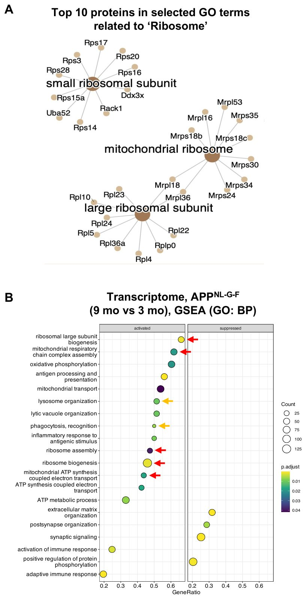
Суреттің толық сипаттамасы
Кеңейтілген 1-сурет. (A) Гендік-концептуалдық желі диаграммалары Ген онтологиясының (GO) «кіші рибосомалық суббірлік», «үлкен рибосомалық суббірлік» және «митохондриялық рибосома» терминдерімен байланыстырылған үздік 10 дифференциалды мол ақуыздарды көрсетеді. Бұл ақуыздар 3 айлық бақылау топтарымен салыстырғанда 9 айлық AppNL-G-F микроглиясында айтарлықтай байытылған. Визуализация Камада–Каваи орналасу алгоритмі көмегімен жасалды. (B) AppNL-G-F микроглиясының транскриптомын көрсететін Биологиялық процесс (BP) терминдерінің Ген жиынтығын байыту талдауының (GSEA) нүктелі диаграммалары. Қызыл көрсеткілер 3 айлық аналогтарымен салыстырғанда 9 айлық AppNL-G-F микроглиясында байытылған анаболикалық қолтаңбаларды және қызғылт сары көрсеткілер катаболикалық қолтаңбаларды көрсетеді.
Маңызды
> Амилоидты патологияның дамуы жағдайында микроглия ақуыз синтезі мен ыдырауын күшейтеді, алайда TREM2 жетіспеушілігі 9 айға қарай бұл анаболикалық бағдарламаны толығымен бұзады.
Бұл метаболикалық өзгерістердің TREM2-ге тәуелді екенін анықтау үшін авторлар App^NL-G-F және App^NL-G-F;Trem2^KO тышқандарының профильдерін салыстырды. TREM2 жоқтығының әсері тікелей ауру сатысына байланысты болды. Aβ мөлшері ең аз болатын 3 айлық жаста TREM2 жетіспеушілігі микроглия протеомында айтарлықтай өзгеріс тудырған жоқ (Сурет S2A). Алайда, 9 айға қарай TREM2 жоғалуы протеомды түбегейлі бұзып, 1480 ақуыздың маңызды өзгеруіне әкелді (Сурет 2A). Протеом да, транскриптом деңгейінде де TREM2 жоғалуы аурумен байланысты микроглия (DAM) қолтаңбаларын, атап айтқанда Gpnmb, Cst7 және Lpl сияқты маркерлерді күрт төмендетті (Сурет 2A–B), бұл TREM2-нің Aβ стрессі кезінде гомеостатикалық микроглияны DAM-ға айналдырудағы шешуші рөлін растайды. DAM қолтаңбасының басылуынан басқа, TREM2 жетіспеушілігінің басты салдары анаболикалық жауаптың күйреуі болды. Протеомдық IPA трансляциямен байланысты жолдардың, соның ішінде SRP-ге тәуелді ақуызды бағыттау, трансляцияның ұзаруы мен аяқталуының айтарлықтай төмендегенін анықтады (Сурет 2C). GSEA цитозольді және митохондриялық рибосомалық компоненттердің, сондай-ақ рибосомалар биогенезінің қысқарғанын растады (Сурет 2D; Сурет S2B). Транскриптомдық талдау ақуыз трансляциясы, рибосомаларды жинау және митохондриялық кешендерге қатысатын гендер экспрессиясының төмендеуін көрсетіп, бұл нәтижелерді толықтырды (Сурет 2E–F; Сурет S2C).

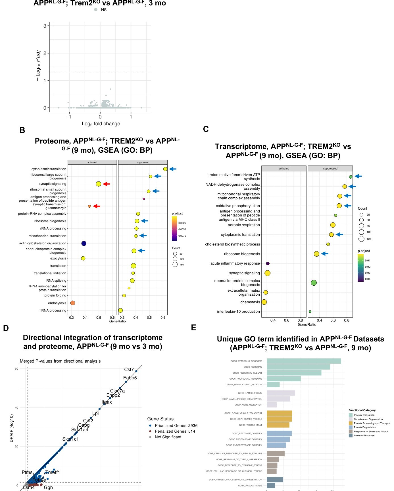
Суреттің толық сипаттамасы
Кеңейтілген 2-сурет. (A) 3 айлық жаста AppNL-G-F;Trem2KO және AppNL-G-F микроглиялары арасында дифференциалды мол ақуыздардың жоқтығын көрсететін жанартау диаграммасы (түзетілген P < 0,05). (B, C) AppNL-G-F;Trem2KO микроглиясының протеомы мен транскриптомын көрсететін BP терминдерінің GSEA. Нүктелі диаграммалар 9 айлық жаста AppNL-G-F аналогтарымен салыстырғанда AppNL-G-F;Trem2KO микроглиясының протеомындағы (B) және транскриптомындағы (C) байытылған жолдарды суреттейді. Көк көрсеткілер басылған «рибосомалық» қолтаңбаларды көрсетеді. (D) ActivePathways көмегімен транскриптом мен протеомның бағытталған интеграциясының корреляциялық талдауы. AppNL-G-F микроглиясында бағытталған талдау (DPM, y осі) және бағытталмаған талдау (Браун әдісі, x осі) арқылы есептелген біріктірілген P мәндерін көрсететін шашырау диаграммасы (9 ай және 3 ай). Деректер жиынтығы бойынша бағыты бойынша келісілген өзгерістері бар басым гендер диагональда немесе оған жақын орналасқан (көк), ал қарама-қайшы бағытталған өзгерістері бар гендер жазаланып, диагональдан төменірек орналасқан (қоңыр). (E) AppNL-G-F микроглиясының мультиомикалық жолды байытуы. AppNL-G-F микроглиясында анықталған, бірақ AppNL-G-F;Trem2KO микроглия деректер жиынтыğында жоқ бірегей GO терминдерін көрсететін гистограмма. Мультиомикалық деректерді біріктіру ActivePathways көмегімен орындалды, бағытталған мәнді біріктіру (DPM) әдісі арқылы жасалған біріктірілген маңыздылық бағалауларымен. Бұл басым терминдер протеостазбен байланысты және алты функционалдық санатқа топтастырылған (түспен көрсетілген). Маңыздылық байыту талдауы үшін кіріс деректері ретінде біріктірілген P мәндерін пайдалану арқылы анықталды.

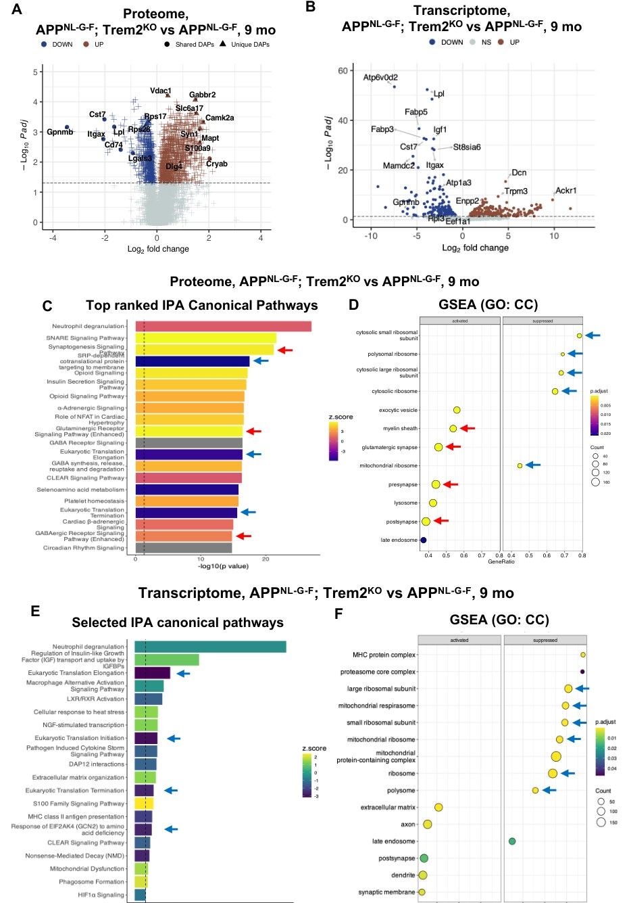
Суреттің толық сипаттамасы
2-сурет: TREM2 тапшылығы анаболикалық жауаптың құлауына әкеледі. (A) 9 айлық AppNL-G-F және AppNL-G-F;Trem2KO микроглиясының протеомын салыстыратын жанартаулық график (Volcano plot). Үшбұрышты нүктелер AppNL-G-F;Trem2KO микроглиясындағы бірегей түрде өзгерген ақуыздарды көрсетеді. Венн диаграммасы транскриптом мен протеом арасындағы бірегей және ортақ гендер мен ақуыздарды көрсетеді. (B) 9 айлық AppNL-G-F және AppNL-G-F;Trem2KO микроглиясының транскриптомын салыстыратын жанартаулық график. (C) Ақуыз трансляциясы жолдарының арнайы басылуын (көк көрсеткілер) және синаптикалық ақуыздар деңгейінің жоғарылауын (қызыл көрсеткілер) көрсететін AppNL-G-F;Trem2KO микроглиясындағы ең жоғары рейтингті жолдардың IPA нәтижелері. (D) Trem2KO микроглиясында цитозольдік және митохондриялық рибосомалық компоненттердің кең көлемде азайғанын растайтын GSEA нүктелік графиктер (көк көрсеткілер); қызыл көрсеткілер синаптикалық және миелиндік қолтаңбалардың бір мезгілде жиналуын көрсетеді. (E) 9 айлық AppNL-G-F және AppNL-G-F;Trem2KO микроглиясындағы дифференциалды түрде экспрессияланатын гендердің (DEG) IPA және GSEA талдауы, ақуыз трансляциясы мен рибосомаға қатысатын басылған гендерді атап көрсетеді (көк көрсеткілер).
Абайлаңыз
> Зерттеу қорытындылары жасанды мутациялары бар генетикалық тышқан үлгілерінде алынған, сондықтан нәтижелерді адамдардағы спорадиалық Альцгеймер ауруына тікелей көшіру кезінде сақтық таныту қажет.
Протеомның жаңаруындағы ақаулардың салдарынан Trem2^KO жасушаларында фагоцитоздан кейін тазартылуы тиіс синапстық және миелиндік ақуыздар жиналып қалды (Сурет 2C–D). Бұл протеостатикалық ақау ерекше жоғарылаған ақуыздардың көбі синапстық компоненттер болғанынан көрінді (Сурет 2A). Бұл деректер микроглия Aβ патологиясына протеомды қайта құрумен және протеостазды сақтаумен байланысты TREM2-ге тәуелді анаболикалық бағдарлама арқылы бейімделетінін көрсетеді.
TREM2 бляшкалармен байланысқан микроглиядағы жаңа ақуыз синтезін ынталандырады
Омикалық талдаулар арқылы in vivo анықталған анаболикалық бағдарламаны растау үшін зерттеушілер жаңадан синтезделген ақуыздарды таңбалау мақсатында Fluorescent Non-Canonical Amino Acid Tagging (FUNCAT) әдісін қолданды (3A-сур.). Жаңа ақуыздар құрамына енетін метионин аналогы — азидогомоаланин (AHA) іш пердесіне енгізілгеннен кейін 16 сағат өткен соң, CX3CR1+ CD45+ микроглия жасушалары ағынды цитометрия көмегімен талданды (SN-сур.). 3 айлық жаста FUNCAT қарқындылығы AppNL-G-F және AppNL-G-F;Trem2KO тышқандарында бірдей болды. Алайda 9 айлық кезінде AppNL-G-F тышқандарының микроглиясында ақуыз синтезі шамамен екі есе өскені байқалды, ал TREM2 жетіспеушілігі бұл белсенділікті толығымен тежеді (3B-C-сур.). Гистограммалар AppNL-G-F микроглиясында жоғары FUNCAT деңгейі бар ерекше шағын популяцияның пайда болғанын көрсетті (3B-сур., қызыл көрсеткі). CD45high микроглия бляшкалардың маңында жиналатыны белгілі болғандықтан, авторлар мұны ақуыз синтезімен байланыстырып зерттеді. CD45high субпопуляциясы Aβ патологиясының өсуіне қарай кеңейсе де (SN-сур.), бұл процесс Trem2 нокаут жасалған тышқандарда байқалмады. CD45high микроглия жасушалары CD45low жасушаларына қарағанда айтарлықтай жоғары FUNCAT қарқындылығын көрсетті (3D-сур.), бұл бляшкалармен байланысқан микроглия ақуыз синтезі ең жоғары деңгейде жүретін негізгі популяция екенін білдіреді. In situ FUNCAT әдісі AppNL-G-F тышқандарының бляшка маңындағы микроглиясында ақуыз синтезінің күшейгенін растады, ал бұл әсер TREM2 болмаған кезде жоғалады (3E-F-сур.).
Түсіндірме
> FUNCAT — бұл стандартты емес аминқышқылдарын флуоресцентті түрде таңбалау арқылы тірі жасушалардағы жаңа ақуыз синтезінің жылдамдығын тікелей өлшеуге мүмкіндік беретін әдіс.
Трансляция аппаратының тікелей компоненті арқылы бұл өсуді растау үшін ғалымдар анаболикалық қолтаңба гендерінің бірі эукариоттық элонгация факторы 1α1 (EEF1A1) үшін бояу жұмыстарын жүргізді. EEF1A1 экспрессиясы AppNL-G-F тышқандарының бляшка маңындағы микроглиясында айтарлықтай артты, бірақ AppNL-G-F;Trem2KO тышқандарында бұл байқалмады (3G, H-сур.). Бұл деректер FUNCAT нәтижелерімен толық сәйкес келіп, анаболикалық бағдарламаның трансляциялық әлеуеттің артуымен тікелей байланысты екенін дәлелдеді. Аталған нәтижелер бұрын анықталған TREM2-mTOR осіне сәйкес келеді: mTORC1 белсенділігінің классикалық маркері болып табылатын фосфорланған рибосомалық ақуыз S6 (p-RPS6) бляшкалармен байланысқан микроглияда TREM2-ге тәуелді түрде өскен (SN-сур.). Жалпы алғанда, бұл нәтижелер TREM2-ге тәуелді анаболикалық бағдарлама бляшка маңындағы микроглияда трансляциялық әлеуеттің артуымен және жаңа ақуыз синтезімен бірге жүретінін көрсетеді.
Маңызды
> 9 айлық AppNL-G-F тышқандарында микроглиядағы ақуыз синтезі шамамен 2 есе артады, және бұл процесс толығымен функционалды TREM2 рецепторына тәуелді.
Анаболикалық бейімделу TREM2-ге тәуелді және Aβ жүктемесінің өсуімен шектеледі
Фагоцитарлық жүктеме мен метаболикалық жауап арасындағы байланысты бағалау үшін біз фибриллярлы Aβ-ны таңбалайтын Methoxy-X04 (X04) флуоресцентті зондын қолдана отырып, Aβ-мен әрекеттесетін микроглия транскриптомдарын талдадық (4A-сурет). AppNL-G-F және AppNL-G-F;Trem2KO тышқандарынан алынған бастапқы микроглия X04⁺ (фагоциттеуші) және X04⁻ (фагоциттемейтін) популяцияларға бөлінді. X04⁺ жасушалары қарқындылығы бойынша төмен, орташа және жоғары жүктеме топтарына жіктелді (4B-сурет). Патологияның ерте сатысында (5-6 ай) X04⁺ жасушаларының үлесі генотиптер арасында ұқсас болды, бұл Aβ-ны бастапқы жұтудың TREM2-ге тәуелді еместігін көрсетеді. Алайда, 9-10 айлық кезеңде TREM2 тапшылығы X04⁺ популяциясын айтарлықтай азайтты, бұл негізінен X04high субпопуляциясының жойылуымен байланысты (4B-C суреттері).
Маңызды
TREM2 тапшылығы амилоидты жұтуға кедергі жасамайды, бірақ 9 айлық жаста жоғары амилоидты жүктемесі бар (X04high) микроглияның өміршеңдігін күрт төмендетеді.
Негізгі компоненттер талдауы (PCA) генотип пен X04 қарқындылығы градиентіне қарай транскриптомдық профильдердің нақты бөлінуін растады (4D-сурет; SN 4A-B суреттері). AppNL-G-F тышқандарында Aβ фагоцитозы митохондриялық жолдарды (тотығу фосфорлануы, электрон тасымалдау тізбегі) және ақуыз синтезі бағдарламаларын (трансляция, SRP-тәуелді бағыттау) күшейтеді (4E-сурет). TREM2-нің болмауы бұл бағдарламаны толығымен блоктайды (SN 4C-сурет). Талдаулар анаболикалық гендердің экспрессиясы X04low жасушаларында ең жоғары деңгейге жететінін және жүктеме артқан сайын төмендейтінін көрсетті. Керісінше, DAM-белгі жолдары (MHC II антигенін таныстыру) X04 қарқындылығымен бірге артады, ал қабыну жолдары (TNF, IFN-γ) басылады (4F-сурет).
Түсіндірме
DAM (Disease-Associated Microglia) — нейродегенерация кезінде микроглияның гомеостатикалық функцияларын жоғалтып, патологиямен күресу үшін гендерді белсендіретін арнайы күйі.
Trem2KO тышқандарында анаболикалық жауап тіпті X04low және X04medium топтарында да байқалмайды (4G-сурет). Жүктеме артқан сайын бұл жасушаларда митохондриялық дисфункция белгілері, компенсаторлық гликолиз және қабыну сигналдарының күшеюі байқалады (4G-H суреттері). Қорытындылай келе, анаболикалық бағдарлама TREM2-ге тәуелді және өзін-өзі шектейді: ол Aβ жұтылғанда белсендіріледі, төмен жүктемеде шыңына жетеді және жүктеме артқан сайын сөнеді, бұл TREM2 тапшылығы кезінде микроглияның метаболикалық күйреуіне әкеледі.
Абайлаңыз
Зерттеу тышқандардың модельдік желілерінде жүргізілді; анықталған метаболикалық өзгерістер адам патологиясы контекстінде расталуы керек.
Анаболикалық қабілет фагоцитарлық құзыретті микроглияның белгісі ретінде
Микроглияның белсенуіндегі анаболикалық бейімделудің рөлін анықтау үшін 9-10 айлық AppNL-G-F тышқандарынан бөлінген X04⁺ (фагоциттейтін) және X04⁻ (фагоциттемейтін) жасушаларына scRNA-seq талдауы жасалды. Кластерлеу HM (гомеостатикалық), ARM (белсенген) және TRM (өтпелі) күйлерін анықтады (Сурет SN 5A-B). Алайда, классикалық DAM (аурумен байланысты микроглия) қолтаңбасын талдау DAM гендерінің X04⁺ және X04⁻ популяцияларында кеңінен таралғанын көрсетті (Сурет SN 5C). Бұл DAM транскрипциялық белгісінің фагоцитозбен айналысатын жасушаларды патологиялық ортаға жауап беретін жасушалардан ажыратуға жеткіліксіз екенін білдіреді.
Түсіндірме
DAM — нейродегенерация кезінде микроглияда пайда болатын және көбінесе функционалдық белсенділіктің әмбебап маркері деп қате қабылданатын транскрипциялық профиль.
Кластерлеу ажыратымдылығын арттыру арқылы HM-ді 0 (фагоциттемейтін) және 2 (фагоциттейтін), ал TRM-ді 6 (фагоциттемейтін) және 1 (фагоциттейтін) субкластерлерге бөлуге мүмкіндік туды (Сурет 5A, B). DAM модульдік ұпайлары фагоциттейтін және фагоциттемейтін жұптар арасында ұқсас болды (Сурет SN 5E), бұл DAM мен фагоцитоз арасындағы байланыстың әлсіз екенін растайды. IPA және GSEA талдаулары фагоцитарлық күйдің рибосома биогенезінің, ақуыз синтезінің және митохондриялық тотығу фосфорлануының синхронды күшеюімен сипатталатынын көрсетті (Сурет 5C; Сурет SN 5F-H).

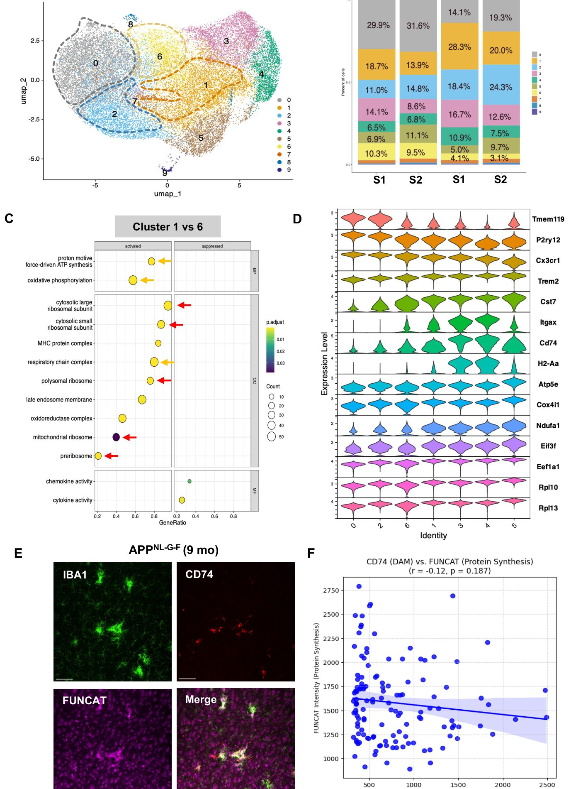
Суреттің толық сипаттамасы
5-сурет: Анаболикалық бейімделу қолтаңбасы фагоцитарлық құзыреттілікті каноникалық DAM қолтаңбасына қарағанда дәлірек анықтайды. (A) 9-10 айлық AppNL-G-F тышқандарынан бөлінген сұрыпталған X04+ (фагоцитарлық) және X04- (фагоцитарлық емес) микроглияның бір жасушалы RNA-seq профильдерінің (0.3 ажыратымдылығы) UMAP проекциясы. Жоғары ажыратымдылықтағы субкластерлеу каноникалық түрде анықталған гомеостатикалық (HM) және өтпелі (TRM) кластерлерді фагоцитарлық және фагоцитарлық емес сипаттағы ішкі популяцияларға (HM 0 және 2 кластерлеріне; TRM 1 және 6 кластерлеріне) бөледі, олар фагоцитарлық құзыреттілік бойынша бөлінеді. (B) X04+ және X04- фракцияларындағы әрбір субкластердің салыстырмалы байытылуын көрсететін кластер құрамын мөлшерлік бағалау. (C) Фагоцитарлық субпопуляцияда (1-кластер) рибосома және тотығу фосфорлану жолдарының күшті байытылуын көрсететін фагоцитарлық субпопуляцияны (1-кластер) фагоцитарлық емес субпопуляциямен (6-кластер) салыстыратын гендер жиынтығын байыту талдауы (GSEA). (D) Анықталған субпопуляциялар бойынша гомеостатикалық қолтаңба (Tmem119, P2ry12, Cx3cr1), DAM қолтаңбасы (Trem2, Cst7, Itgax, Cd74, H2-Aa) және анаболикалық бейімделу қолтаңбасының (Atp5e, Cox4i1, Ndufa1, Eif3f, Eef1a1, Rpl10, Rpl13) экспрессиясын көрсететін скрипкалық графиктер. DAM қолтаңбасы фагоцитарлық және фагоцитарлық емес күйлер арасында салыстырмалы болғанымен, анаболикалық бейімделу қолтаңбасы фагоцитарлық кластерлерде (1 және 2) таңдамалы түрде жоғарылаған. (E) Iba1, DAM маркері CD74 және FUNCAT (жаңадан түзілетін ақуыз синтезі) үшін бірлесіп боялған 9 айлық AppNL-G-F тышқандарындағы бляшкамен байланысқан микроглияның өкілді конфокальды кескіндері. Көптеген Iba1high микроглия күшті FUNCAT сигналын көрсетеді, ал CD74 тек бір бөлігінде ғана индукцияланады. Масштабты сызық: 50 мкм. (F) Транскрипциялық DAM күйі анаболикалық белсенділікті болжамайтынын көрсете отырып, жеке Iba1+ микроглия ішіндегі FUNCAT және CD74 қарқындылығы арасындағы корреляцияны мөлшерлік бағалау (Пирсон R = -0.12, P = 0.187).
Маңызды
Микроглияның фагоцитарлық белсенділігі классикалық DAM қолтаңбасына қарағанда анаболикалық профильмен (ақуыз және АТФ синтезі) жақсырақ сипатталады.
Анаболикалық бейімделу Eef1a1 трансляция факторының, рибосомалық суббірліктердің (Rpl10, Rpl13) және электрон тасымалдау тізбегі компоненттерінің (Ndufa1, Cox4i1, Atp5e) индукциясын қамтиды (Сурет 5D). Фагоциттейтін кластерлерде (1, 2) нейроқабыну сигналдары фагоциттемейтін кластерлерге (6, 0) қарағанда төмендеген (Сурет SN 5F, G). 9 айлық AppNL-G-F тышқандарының ми кесінділерінде Iba1, CD74 және FUNCAT әдісі арқылы жүргізілген тексерулер бляшкалар маңындағы көптеген жасушалардың (Iba1high) жоғары анаболикалық белсенділікке ие екенін, ал CD74 тек ішінара индукцияланып, FUNCAT қарқындылығымен корреляцияланбайтынын растады (R = −0.12, P = 0.187; Сурет 5E, F).
Абайлаңыз
Зерттеу тышқандардың Альцгеймер моделінде жүргізілген; анаболизм мен фагоцитоз арасындағы корреляция тікелей себеп-салдарлық байланысты білдірмейді.
Анаболикалық бағдарламаның жойылуы протеостатикалық шамадан тыс жүктелумен байланысты
Біздің омикстік зерттеулеріміз микроглияның фагоцитозды қолдау қабілеті энергиямен қамтамасыз етуге тікелей байланысты екенін көрсетеді. Біз TREM2 тапшылығы фагоциттелген материалды қайта өңдеудің бұзылуына әкелетінін тексердік. Конфокальды микроскопия Trem2KO микроглиясында амилоидты бляшкалардың жанында постсинаптикалық PSD95 ақуызының айтарлықтай жиналатынын көрсетті (6-сурет A, B). Бұл шоғырлар CD68+ лизосомаларымен қоршалған, бұл деградация процестерінің тоқтап қалғанын білдіреді (SN-сурет). Осыған ұқсас жинақталу пресинаптикалық vGluT1 маркері (SN-сурет) және миелинді MBP ақуызы үшін де байқалды (6-сурет C, D). PSD95 пен MBP амилоид құрамына кірмейтіндіктен, олардың жинақталуы TREM2 арқылы жүретін анаболикалық қолдау болмаған кезде деградация механизмдерінің жалпы істен шыққанын көрсетеді.
Маңызды
TREM2 болмаған кезде микроглия фагоциттелген материалды қайта өңдей алмайды, бұл жасуша ішінде синаптикалық және миелиндік «қоқыстардың» жиналуына әкеледі.
Trem2KO микроглиясының бір бөлігінде біз PSD95 немесе MBP-ға толы ірі (2–8 мкм) көпіршіктерді байқадық (SN-сурет). 3D-реконструкция бұл құрылымдардың микроглия өсінділерінен пайда болып, олармен жіңішке нанотүтікшелер арқылы байланысқанын көрсетті (6-сурет E, H; SN-сурет). Мұндай өсінділердің ішінде Aβ, PSD95 және MBP жиналады. Сандық талдау бұл ауытқулардың күрт өскенін растады: 105 мкм³ көлемде AppNL-G-F;Trem2KO тышқандарында орташа есеппен 7–8 осындай өсінді анықталды, ал бақылау тобында 0,5-тен аз (6-сурет G, J). Бляшкалар айналасындағы Trem2KO микроглиясының 60–70%-ы протеостатикалық шамадан тыс жүктелу белгілерін көрсетті, ал бақылауда — 2%-дан аз.
Абайлаңыз
Зерттеу трансгендік тышқандарда жүргізілді; жасушалардағы ақуыздардың жинақталуы функционалдық тапшылықты көрсетеді, бірақ адам патологиясына қатысты сақтықпен қарау керек.
Анаболикалық бағдарламаның жойылуы митохондриялық дисфункциямен байланысты
Биоэнергетиканы бағалау үшін біз MitoTracker Green (митохондрияның жалпы массасы) және Red CMXRos (мембраналық потенциал) бояғыштарымен ағынды цитометрияны қолдандық. AppNL-G-F тышқандарында бляшкалар жанындағы микроглия (CD45high) Aβ клиренсіне бейімделіп, потенциалды да, лизосомалық массаны да арттырды (7-сурет A, B). Керісінше, Trem2KO-да ажырау байқалды: митохондрия массасы артқанымен, олардың мембраналық потенциалы төмендеді. Митохондриялық денсаулық индексі Trem2KO жасушаларында айтарлықтай төмен болды (7-сурет C), бұл метаболикалық тұрғыдан белсенді емес митохондриялардың жинақталуын білдіреді. Лизосомалық масса (LysoTracker) генотиптер арасында ерекшеленбеді (7-сурет D).
Түсіндірме
Митохондриялық денсаулық индексі — бұл функционалды белсенді митохондрияларды зақымдалғандарынан ажыратуға мүмкіндік беретін есептік көрсеткіш.
Биогенезді бағалау үшін біз AHA метаболикалық таңбасын және жаңа синтезделген TOM20 ақуызын анықтау үшін PLA-талдауын қолдандық. AppNL-G-F тышқандарында бляшкалар жанындағы микроглия белсенді түрде жаңа митохондриялар синтездеді (TOM20-PLA+ сигналы; 7-сурет E, F). Trem2KO-да бұл процесс басылған, бұл митохондриялық биогенезді индукциялау үшін TREM2 қажет екенін дәлелдейді. Жаңару болмаса да, Trem2KO жасушаларында митохондриялардың жалпы массасы жоғары болып қалды (SN-сурет), бұл ескі органеллалардың жинақталуын көрсетеді. VDAC1 және аутофагия рецепторы p62/SQSTM1-ді бірге бояу Trem2KO микроглиясында P62+/VDAC1+ агрегаттарын анықтады (7-сурет G, H), бұл митофагия — зақымдалған митохондрияларды жою процесінің бұзылғанын білдіреді.
Адам микроглиясындағы анаболикалық бағдарламаның Альцгеймер ауруының өршуімен әлсіреуі
Тышқандарда анықталған анаболикалық бағдарламаның адам ауруындағы маңыздылығын тексеру үшін біз 523 донордың жасы мен Браак сатылары жазылған адам миының ядролық транскриптом атласын (ssKIND) талдадық (1-кесте). Әрбір микроглия ядросы үш модуль бойынша бағаланды: анаболикалық, DAM (аурумен байланысты микроглия) және гомеостатикалық. Талдаулар бұл күйлердің транскриптом картасында бөлек аймақтарды алатынын көрсетті, бұл анаболикалық күйдің ерекшелігін растайды (8A-сурет, SN-сурет). Ауру 0–II сатыдан V–VI сатыға өткенде, анаболикалық индекс жасқа қарай түзетілгенде айтарлықтай төмендеді (β = -0,41, P = 1,8 × 10⁻⁵; Spearman R = -0,35), ең күрт төмендеу III–IV және V–VI сатылар арасында байқалды (8B-сурет). Бақылау гендері мен анықталған гендер саны тұрақты болып қалды, бұл техникалық қателіктерді жоққа шығарады (SN-сурет).
Маңызды
Адам микроглиясының анаболикалық белсенділігі Альцгеймер ауруында прогрессивті түрде төмендейді, бұл жоғары анаболикалық индексі бар жасушалар үлесінің III–IV сатылардағы 66,7%-дан V–VI сатылардағы 21,4%-ға дейін қысқаруында көрінеді.
Түсіндірме
Браак сатылары — бұл мидағы патологиялық ақуыздардың таралуына негізделген нейродегенерацияның ауырлығын бағалау жүйесі: бастапқы (I–II) сатылардан кешкі (V–VI) сатыларға дейін.
Біз микроглияларды «анаболикалық белсенді» (индекс бойынша жоғарғы 30%) топтарға бөлдік және олардың үлесіндегі өзгерістерді талдадық. Мұндай жасушалардың үлесі кешкі сатыларда күрт қысқарды (P < 1 × 10⁻⁴, Spearman R = -0,32; 8C-сурет), ал топ ішіндегі орташа индекс аздап төмендеді (8D-сурет). Декомпозиция төмендеудің шамамен 62%-ы жасушалар санының азаюымен, ал 38%-ы жасуша ішіндегі белсенділіктің төмендеуімен байланысты екенін көрсетті (SN-сурет). TREM2 экспрессиясы барлық сатыларда анаболикалық индекспен оң корреляция жасады (8E-сурет) және бұл байланыс Браак сатысы бақыланғанда да сақталды (ішінара корреляция коэффициенттері +0,24-тен +0,35-ке дейін; SN-сурет), бұл функционалдық байланысты көрсетеді.
Абайлаңыз
Зерттеу мидың өлімнен кейінгі транскриптом деректеріне негізделген, сондықтан анықталған корреляциялар TREM2 мен анаболизм арасындағы тікелей себеп-салдарлық байланысты дәлелдемейді.
Анаболикалық бағдарлама мен DAM-таңбаның орташа көрсеткіштері қарама-қарсы бағытта өзгергенімен (8F-сурет), Браак сатысы бақыланғанда олардың арасында оң байланыс анықталды (ішінара R = 0,23; 8H-сурет) және TREM2-мен де (ішінара R = +0,28, P < 1 × 10⁻⁴; SN-сурет). Бұл аурудың бір сатысында анаболизм мен DAM-күйі бірге өмір сүре алатынын, бірақ патология өршіген сайын DAM-таңба сақталса да, анаболикалық бағдарламаның әлсірейтінін білдіреді. Бұл биосинтетикалық құзыреттіліктің микроглияның функционалдық тұрақтылығының классикалық DAM-маркерлеріне қарағанда тәуелсіз және дәлірек көрсеткіші екенін растайды.
Талқылау
Альцгеймер ауруы кезіндегі микроглияның белсенділенуі
Альцгеймер ауруы кезінде микроглияның белсенділенуі дәстүрлі түрде аурумен байланысты микроглия (DAM) күйіне өтуімен анықталады. Бұл қолтаңба фагоцитарлық рецепторларды (мысалы, Clec7a, Axl, MerTK) қамтитындықтан, DAM фенотипі көбінесе күшейтілген фагоцитарлық функциямен теңестіріледі. Біздің нәтижелеріміз бұл теңдіктің дұрыс емес екенін көрсетеді. Бір жасушалы және in situ талдауларында DAM қолтаңбасы мен фагоцитарлық қабілет ажыратылды: DAM модулінің көрсеткіштері метаболикалық жетіспеушілігі бар микроглияның өзінде патологиялық жүктемеге сай болды, ал жеке, TREM2-ге тәуелді анаболикалық бағдарлама (митохондриальды биогенезбен байланысқан күшейтілген ақуыз синтезі) функционалды түрде белсенді жасушаларды жақсырақ ажыратты.
Маңызды
DAM транскрипциялық қолтаңбасы тазартуға деген тек «сұранысты» көрсетсе, микроглияның функционалдық тұрақтылығы тәуелсіз, TREM2-ге тәуелді анаболикалық бағдарламамен («ұсыныс») анықталады, ол патология күшейген сайын таусылады.
Түсіндірме
In situ талдауы — тіндердің табиғи құрылымын бұзбай, жасушаларды өз ортасында тікелей зерттеу әдісі.
Перифериялық макрофагтарда метаболизм көбінесе гликолитикалық қабынуға қарсы және тотығу-фосфорлануға тәуелді қабынуға қарсы емес күйлерге бөлінеді. Біздің мәліметтеріміздегі бляшкалармен байланысқан микроглия бұл бинарлыққа сай келмеді, бір мезгілде биомасса синтезін және митохондриальды тыныс алуды қосты, бұл белсендірілген T-жасушаларындағы mTOR басқаратын трансляциялық және митохондриальды сыйымдылықтың ұлғаюын еске түсіреді. Ұсынылып отырған функционалдық мәні протеостатикалық болып табылады: Aβ және жасушалық қоқыстарды үздіксіз ішке қабылдау лизосомалық ферменттерді, мембраналарды және АТФ-ты гомеостатикалық синтез ауыстыра алатын жылдамдықтан тезірек тұтынады. Байқалған рибосомалық және митохондриальды биогенездің жоғарылауы осы протеостатикалық ресурс пен сыйымдылықты сақтауға қызмет етуі мүмкін.
Абайлаңыз
Митохондриальды биогенез жетіспеушілігі мен Trem2KO микроглиясындағы функционалдық бұзылулар арасындағы себеп-салдарлық тізбек ассоциативті сипатқа ие, өйткені анаболикалық өске тікелей әсер ететін ортогональды манипуляция жасалған жоқ.
Бұл бақылауларды адам ауруына кеңейте отырып, біз Браак сатыларын қамтитын біріктірілген адам ядролық атласы арқылы микроглияның анаболикалық бейімделуін зерттедік. Анаболикалық бағдарлама кеш Браак сатысында (V-VI) микроглияда төмендеді және ауру сатысы шегінде TREM2-мен оң байланыста қалды, бұл оның адам микроглиясында сақталғанын және аурудың өршуімен бірге жойылатынын көрсетеді. Тышқанның X04 градиенті және адамның Браак градиенті осылайша жүктемеге тәуелді бірдей басылуды екі масштабта сипаттайды. Бұл бақылаулар кросс-секциялық және корреляциялық сипатта болғанымен, түраралық ұқсастық анаболикалық өстің адамның Альцгеймер ауруы үшін маңыздылығын нығайтады.
Бұл бақылаулар амилоидқа қарсы иммунотерапия үшін потенциалды салдарға ие. Aβ-ға бағытталған антителалардың клиникалық тиімділігі ішінара микроглияның Fc-рецептор арқылы фагоцитозды жүзеге асыру қабілетіне байланысты, бұл айтарлықтай биоэнергетикалық шығынды талап етеді. Егер фагоцитозды қолдайтын анаболикалық бағдарламаның өзі фагоцитарлық жүктемемен басылса, онда ұзақ мерзімді фармакологиялық стимуляция микроглияны биосинтетикалық шаршауға әкелуі мүмкін. Бұл амилоидты иммунотерапияны анаболикалық өсті қолдайтын шаралармен біріктіру микроглияның тазарту қабілетін сақтауға көмектеседі деген гипотезаны тудырады.
Маңызды
Патологияның өсуі кезінде микроглияның анаболикалық әлеуетінің төмендеуі амилоидқа қарсы иммунотерапияның сәттілігіне қатер төндіреді, бұл тазарту қабілетін сақтау үшін метаболикалық қоспаларды бірге қолдану қажеттілігін көрсетеді.
Әдістер
Реагенттер және ресурстар
| Реагент немесе ресурс | Дереккөз | Идентификатор |
|---|---|---|
| Антиденелер | ||
| Anti-Amyloid β (N) (clone 82E1) | IBL Co., LTD. | Cat#10323; RRID:AB_10707424 |
| Anti-Iba1 | Wako | Cat#019-19741; RRID:AB_839504 |
| Anti-Phospho-RPS6 | Cell Signaling Technology | Cat#4858; RRID:AB_916156 |
| Anti-PSD95 sdAb (FluoTag-X2, AF568) | Synaptic Systems | Cat#N3702-AF568-L; RRID:(not assigned] |
| Anti-VGLUT1 sdAb (FluoTag, At488) | Synaptic Systems | Cat#N1602-At488-L; RRID: (not assigned) |
| Anti-TOM20 | Proteintech | Cat#11802-1-AP; RRID:AB_2207530 |
| Anti-VDAC1 (CoraLite488) | Proteintech | Cat#CL488-10866; RRID:AB_3672468 |
| Anti-MBP | Cell Signaling Technology | Cat#78896; RRID:AB_2799920 |
| Anti-Cleaved Caspase-3 (Asp175) (9661) | Cell Signaling Technology | Cat#9661; RRID:AB_2341188 |
| Anti-CD74 | BioLegend | Cat#151002; RRID:AB_2566502 |
| Anti-CD11b (clone M1/70) | Invitrogen | Cat# 14-0112-82, clone M1/70; RRID:AB_464935 |
| Anti-CD16/32 (Fc block) | eBioscience/BD | Cat# 14-0161-82 |
| Химикаттар, пептидтер және рекомбинантты ақуыздар | ||
| Azidohomoalanine (AHA) | Thermo Fisher Scientific (Invitrogen) | Cat#C10102 |
| Methoxy-X04 | Tocris Bioscience | Cat#4920 |
| Alexa Fluor 647-Alkyne | Thermo Fisher Scientific | Cat# A10278 |
| Biotin-Alkyne | Thermo Fisher Scientific | Cat# B10185 |
| Fixable Viability Dye eFluor 780 | eBioscience | Cat#65-0865-14 |
| Критикалық коммерциялық жиынтықтар | ||
| Click-iT Cell Reaction Buffer Kit | Thermo Fisher Scientific | Cat#C10269 |
| Duolink In Situ PLA probes & reagents | Sigma-Aldrich | Cat# DUO92101 |
| Neural Tissue Dissociation Kit (P) | Miltenyi Biotec | Cat#130-107-677 |
| Myelin Removal Beads II | Miltenyi Biotec | Cat#130-096-733 |
| CD11b MicroBeads | Miltenyi Biotec | Cat#130-049-601 |
| Quick-RNA MiniPrep | Zymo Research | Cat#R1055 |
| 10x Genomics Chromium Next GEM Single Cell 3' Kit | 10x Genomics | Cat# 1000779 |
| Депозиттелген деректер | ||
| Bulk RNA-seq and scRNA-seq (mouse microglia) | This paper; GEO | GEO: pending |
| Mass-spectrometry proteomics (TMT) | This paper; ProteomeXchange/PRIDE | PXD: pending |
| Human snRNA-seq microglia (ssKIND atlas, 523 donors) | ssKIND database | https://bmblx.bmi.osumc.edu/sskind/ |
| Эксперименттік модельдер: Организмдер/Штамдар | ||
| Mouse: AppNL-G-F | Dr. Takaomi Saido (RIKEN Center for Brain Science) | RRID: (not assigned) |
| Mouse: Trem2 knockout (Trem2KO) | The Jackson Laboratory | Strain#027197 |
| Бағдарламалық қамтамасыз ету және алгоритмдер | ||
| STAR aligner | Dobin et al. | v2.7.x; RRID:SCR_004463 |
| Flexbar | v3.x | |
| featureCounts (Subread) | v2.x; RRID:SCR_012919 | |
| R | v4.x; RRID:SCR_001905 | |
| DESeq2 | Love et al. | v1.42.1; RRID:SCR_015687 |
| EnhancedVolcano | v1.x | |
| limma | v3.x; RRID:SCR_010943 | |
| clusterProfiler | v4.11.0.2; RRID:SCR_016884 | |
| Ingenuity Pathway Analysis (IPA) | QIAGEN | RRID:SCR_008653 |
| coin (permutation tests) | v1.4.x | |
| VennDiagram | N/A | |
| Proteome Discoverer | Thermo Fisher Scientific | V3.0; RRID:SCR_014477 |
| ImageJ / Fiji | NIH | RRID:SCR_003070 |
| Imaris | Oxford Instruments | v11.0; RRID:SCR_007370 |
| Cell Ranger | 10x Genomics | v7.0.0; RRID:SCR_017344 |
| Seurat | v4.x; RRID:SCR_016341 | |
| DoubletFinder | v2.0.3 | |
| scanpy | v1.11.5; RRID:SCR_018139 | |
| anndata | v0.11.4 | |
| leidenalg / python-igraph | v0.10.2 / v0.11.9 | |
| umap-learn | v0.5.9 | |
| numpy / pandas / scipy / statsmodels | v2.2.5 / v2.3.3 / v1.15.3 / v0.14.5 | |
| matplotlib / seaborn | v3.10.8 / v0.13.2 | |
| GraphPad Prism | GraphPad Software | v9.5.1; RRID:SCR_002798 |
Эксперименттік модельдер және нысан сипаттамалары
Зерттеу барысында App^NL-G-F линиясындағы тышқандар мен Trem2 гені нокаут жасалған тышқандар (Trem2KO, #027197 штаммы) пайдаланылды. Қос мутантты алу үшін App^NL-G-F тышқандары Trem2KO-мен будандастырылып, екі модификация бойынша да гомозиготты App^NL-G-F; Trem2KO ұрпағы алынды. Жануарлар патогенсіз тосқауылды виварийде, стандартты 12 сағаттық жарық пен қараңғылық циклінде, су мен азыққа еркін қолжетімділік жағдайында ұсталды. Торлардың тығыздығы бір торға ең көбі 5 дарақтан келетіндей етіп сақталды. Тәжірибелерге еркек те, ұрғашы тышқандар да қатысты. Жануарлармен жасалатын барлық процедуралар Ұлттық денсаулық сақтау институттарының (NIH) нұсқаулықтарына қатаң сәйкес жүргізіліп, Огайо штаты университетінің Жануарларды күту және пайдалану комитетімен (IACUC) мақұлданды. Адам микроглиасына деректерді талдау үшін ssKIND біріктірілген ядролық атласынан жасушалар іріктелді. Микроглиа ретінде аннотацияланған (cell_type = “Microglia”), Альцгеймер ауруы диагнозы расталған (Disease_consistent = “AD”) және жасы мен Браак сатылары бойынша сенімді метадеректері бар донорлардың жасушалары қалдырылды. Браак сатылары 0–II, III–IV, V–VI топтарға бөлінді; донорлардың жасы 51–78 жас және 78 жастан асқан деп топтастырылды (ең жас 20–51 жастағы топта Альцгеймерге сәйкес келетін микроглиа жасушалары болмады). Қорытынды деректер жиынтығы ми аймақтарынан жиналған 523 донордан алынған 204 283 микроглиа жасушасын қамтыды. Өңделмеген бүтін сан есептегіштері псевдобулк жинақтау үшін сақталды, ал кластерлеу мен орналастыру үшін біріктірілген scVI латентті кеңістігі (30 өлшемді) қолданылды. Егер басқаша көрсетілмесе, талдаулар барлық жастағы донорларды біріктіріп, тек Браак сатыларын ғана ажыратады.
Түсіндірме
Ген нокауты — зертханалық жануарларда белгілі бір геннің қызметін зерттеу мақсатында оны әдейі жұмыс істемейтін етіп өшіру әдісі.
Әдіс туралы толық мәлімет
In vivo метаболикалық таңбалау үшін тышқандарға стерильді фосфат-тұзды буферде (PBS) ерітілген азидогомоаланин (AHA) 50 мг/кг дозада құршішілік инъекция арқылы егілді. Жануарлар инъекциядан кейін 16 сағат өткен соң эвтаназия жасалды. Ағынды цитометрия үшін бөлінген жасушалар өндірушінің нұсқаулығына сай Click-iT Cell Reaction Buffer Kit жиынтығы көмегімен Alexa Fluor 647-Alkyne заттарымен әрекеттестірілді. Жақындықты лигирлеу талдауы (PLA) үшін мидың еркін кесінділері антиденелермен инкубациялау алдында Click-iT жиынтығын қолдана отырып, биотин-алкинмен әрекетке түсірілді. Ересек тышқандардың микроглиасын бөліп алу және сұрыптау магнитті-белсендірілген жасушалық сұрыптау (MACS) әдісімен жүзеге асырылды. Жануарларға наркоз беріліп, қан айналымындағы лейкоциттерді шайып шығару үшін мұздатылған PBS көмегімен жүрек арқылы перфузия жасалды. Ми кесіліп, мұзда салқындатылды және Neural Tissue Dissociation Kit (P) мен gentleMACS Tissue Dissociator құрылғысы көмегімен ыдыратылды. Жасуша суспензиясы 70 мкм сүзгі арқылы өткізіліп, 300 × g жылдамдықта 10 минут бойы центрифугаланды. Миелин Myelin Removal Beads II магниттік моншақтары арқылы аластатылды. Алынған біржасушалы суспензия дереу цитометрияға қолданылды немесе CD11b MicroBeads мен LS бағандары арқылы транскриптомдық талдау үшін байытылды.
Амилоидты жүктемені бағалау үшін Метокси-X04 (X04) қосындысы диметилсульфоксидте (DMSO) ерітіліп, артынан тұрақты сарғыш-жасыл эмульсия алу үшін пропиленгликоль мен PBS қоспасында (1:1 қатынасында) сұйылтылды. Жаңадан дайындалған ерітінді тіндерді жинауға 16 сағат қалғанда 10 мг/кг дозада құршішілік егілді. Ағынды цитометриялық талдау үшін бөлінген жасушалар өлі жасушаларды алып тастау және арнайы емес байланысуды болдырмау үшін Fixable Viability Dye eFluor 780 (1:1000) және anti-CD16/32 (Fc Block, 1:200) реагенттерімен инкубацияланды. Содан кейін жасушалар CD11b, CD45 және CX3CR1 маркерлеріне қарсы флуороформен конъюгацияланған антиденелермен боялды. Тірі микроглиалар (CD45^int; CD11b⁺; CX3CR1⁺) DAPI қоздыру арнасындағы (405 нм) флуоресценция бойынша X04⁺ немесе X04⁻ болып гейттелді. Гейтинг шектерін анықтау үшін Метокси-X04 егілген жабайы типтегі жануарлар биологиялық теріс бақылау ретінде пайдаланылды.
Кесте 1. Браак сатысы бойынша адамның БА микроглия деректер жинағының когорталық сипаттамалары
| Сипаттама | Браак 0–II | Браак III–IV | Браак V–VI | Барлығы |
|---|---|---|---|---|
| Донорлар, n | 34 | 223 | 266 | 523 |
| Жас, жыл – орташа (диапазон) | 81.2 (64–96) | 89.2 (68–108) | 83.7 (56–101) | 85.9 (56–108) |
| Жынысы, Ә / Е | 21 / 13 | 130 / 93 | 162 / 104 | 313 / 210 |
| Платформа (snRNA / scRNA) | 34 / 0 | 223 / 0 | 266 / 0 | 523 / 0 |
| Микроглия, n (ядролар) | 8,445 | 53,609 | 142,229 | 204,283 |
Деректер 14 бір ядролы RNA-seq зерттеуінен алынған 523 донорын (313 әйел / 210 еркек) қамтиды.
PLA (In Situ Proximity Ligation Assay) әдісімен талдау
Жаңадан түзілген митохондриялық ақуыздарды визуалдау үшін AHA енгізілген тышқандардың ми кесінділері биотин-алкинмен «клик-реакцияға» түсірілді. Жуылғаннан кейін кесінділер TOM20 (1:500) және биотинге (1:500) қарсы антиденелермен инкубацияланды. Сигналды күшейту үшін өндірушінің хаттамасына сәйкес PLA зондтары (Duolink) қолданылды.
Түсіндірме
PLA әдісі жасуша ішіндегі ақуыздық өзара әрекеттесулерді немесе молекулаларды жоғары дәлдікпен анықтауға мүмкіндік береді, мұнда тек екі нысаналы антидене 40 нм-ден жақын қашықтықта орналасқанда ғана флуоресцентті сигнал түзіледі.
РНҚ секвенирлеу және биоинформатика
Микроглиядан жалпы РНҚ Quick-RNA жиынтығы арқылы бөлініп алынды (РНҚ тұтастық индексі > 8). cDNA кітапханалары SMART Seq® mRNA LP Kit көмегімен дайындалып, HiSeq 4000 жүйесінде секвенирленді. FASTQ деректері STAR (v2.7.10a) арқылы тышқан геномына (GRCm39) теңестірілді, Flexbar арқылы адаптерлер алынып тасталды және featureCounts арқылы есептелді. Талдау R (v4.3.3) ортасында жүргізілді.
Сандық протеомдық талдау
Ми лизаттары (5% SDS, 50 мМ TEAB) STrap Midi MS құрылғысының көмегімен өңделді (әр үлгі үшін 2000 мкг ақуыз). Процесс DTT-мен қалпына келтіруді, иодоацетамидпен алкилдеуді және трипсин/Lys-C-мен қорытуды қамтыды. Пептидтер TMT-белгілерімен белгіленіп, біріктірілді және HPLC (12 фракция) арқылы фракцияланды. Талдау Proteome Discoverer 2.5 көмегімен LC-MS/MS жүйесінде жүргізілді. FDR ≤ 0.05 (Бенджамини-Хохберг әдісі) маңызды деп қабылданды.
Гистологиялық талдау және микроскопия
Қалыңдығы 40 мкм ми кесінділері иммунофлуоресцентті әдіспен (Aβ, Iba1, PSD95, VGLUT1, TOM20, VDAC1, MBP, Caspase-3, CD74 маркерлерімен) боялды. Кескіндер ZEISS Axio Observer немесе Nikon AXR конфокалды микроскоптарында алынды. 2D кескіндер ImageJ бағдарламасында «Otsu» немесе «Triangle» автоматты шектері арқылы талданды. Статистика t-критерийі немесе ANOVA арқылы есептелді.
Бір жасушалы секвенирлеу (scRNA-seq)
Кітапханалар 10x Genomics Chromium (әр үлгі үшін 10 000 жасуша) көмегімен дайындалып, Illumina NovaSeq жүйесінде секвенирленді (әр жасуша үшін 50 000–100 000 оқылым). Деректер Cell Ranger (v7.0.0) арқылы mm10 геномына теңестірілді. Seurat (v4.1.1) көмегімен < 1500 белгісі, < 3000 UMI немесе > 5% митохондриялық оқылымы бар жасушалар алынып тасталды.
Статистикалық талдау және функционалды байыту
Гендердің дифференциалды экспрессиясы (DEG) DESeq2 (v1.42.1) көмегімен FDR < 0.05 деңгейінде есептелді. Жолдар талдауы IPA (Ingenuity Pathway Analysis) арқылы z-score көмегімен жүзеге асырылды. GSEA талдауы clusterProfiler пакеті арқылы өткізілді, гендер log2 Fold Change және p-мәні бойынша реттелді. Нәтижелер нүктелі диаграммалар және «ген-концепция» желілері (cnetplot) арқылы визуалдандырылды.
3D конфокальды визуализация және иерархиялық статистикалық модельдеу
Iba1-оң (Iba1+) микроглиалды қызығушылық аймақтарының (ROI) морфологиялық және биохимиялық қасиеттерін сандық бағалау үшін Nikon AXR конфокальды микроскопы қолданылды. AppNL-G-F тышқандарындағы микроглияның жоғары тығыздығына байланысты, ROI жеке жасушалар емес, морфологиялық бірліктер ретінде анықталды. Реконструкция және талдау Imaris (v11.0) бағдарламасында орындалды. Iba1+ беттерін сегменттеу машиналық оқыту алгоритмі арқылы жүзеге асырылды. Маркерлердің көлемдік колокализациясы фондық шуды түзету арқылы есептелді және көлемдер воксел санына ауыстырылды. Iba1+ беттеріндегі маркерлердің орташа флуоресценция қарқындылығы өлшенді. Микроглия плакалармен байланысты (PAM) және байланысты емес (NPAM) түрлеріне бөлінді.
Түсіндірме
ROI (қызығушылық аймағы) — талданатын кескіннің бөлінген бөлігі, ал GLMM — деректердің иерархиялық құрылымын (мысалы, бір жануардан алынған көптеген ROI) ескеретін статистикалық модель.
Иерархиялық деректерді талдау үшін R ортасында (glmmTMB, emmeans пакеттері) жалпыланған сызықтық аралас модельдер (GLMM) қолданылды. Пропорционалды деректер үшін бета-биномиалды, үздіксіз деректер үшін гамма-таралу таңдалды. Модельдердің сәйкестігі DHARMa пакетімен тексерілді. Нәтижелер 95% сенімділік интервалдарымен бағаланған маржиналды орташа мәндер (EMM) ретінде ұсынылды.
Микроглия қосындыларын сандық талдау және параметрлік емес статистика
Қосындылардың тығыздығы (PSD95, MBP) «соқыр» әдіспен бағаланды: бірінші талдаушы плаканы белгіледі, екіншісі қосындыларды санады. Тығыздық плака көлемінің 10⁵ µ m³ бөлігіне келетін қосындылар саны ретінде көрсетілді. AK (бақылау) және AKTK (тәжірибе) топтары арасындағы айырмашылықтарға байланысты стандартты GLMM сәйкес келмеді, сондықтан coin (v1.4.3) пакетінің көмегімен нақты ауыстырымды Вилкоксон тесті қолданылды.
Алдын ала қалыпқа келтіру және дублеттерді жою
Seurat көмегімен сапаны бақылаудан (QC) кейін деректер қалыпқа келтірілді. Митохондриялық және рибосомалық гендердің үлесі сақталды. DoubletFinder (v2.0.3) көмегімен дублеттер (орташа 10%) анықталып, жойылды. Қорытынды талдауда 26 096 жасуша қалды.
SCTransform қалыпқа келтіруі, интеграция және кластерлеу
SCTransform көмегімен қалыпқа келтіру жүргізіліп, 3000 ең өзгермелі ген таңдалды. Төрт үлгіні интеграциялау үшін FindIntegrationAnchors және IntegrateData (reciprocal PCA, k=5) функциялары пайдаланылды. Кластерлеу Louvain алгоритмімен (20 негізгі компонент, 0.3 ажыратымдылық) орындалды. Визуализация UMAP арқылы жүзеге асырылды.
Кластерлерді аннотациялау және дифференциалды экспрессия
Жасуша түрлері маркерлер (Вилкоксон тесті) және AppNL-G-F деректер базасымен салыстыру арқылы анықталды. Микроглия емес жасушалар шығарылғаннан кейін (25 776 қалды), 7 микроглия күйі анықталды. Дифференциалды экспрессияланған гендер (DE) Бонферрони түзетуімен (p < 0.05) анықталды.
Ген модульдері мен сигнатуралар талдауы
Микроглия күйлерін (HM, ARM, TRM, IRM, CPM, DAM т.б.) бағалау үшін AddModuleScore функциясы пайдаланылды. Экспрессия деңгейлері «скрипка» графиктерде (stacked violin plots) көрсетілді.
Мульти-омика және интегративті талдау
AppNL-G-F және Trem2KO тышқандарынан алынған РНҚ-секвенирлеу және протеомика деректері интеграцияланды. Venn диаграммасы (VennDiagram v1.7.3) арқылы қиылысулар анықталды. Ортақ процестерді табу үшін Brown әдісі және [mRNA=1, protein=1] салмақ векторымен ActivePathways әдісі қолданылды.
Интегративті жолдарды байыту талдауы
Функционалдық байыту біріктірілген деректер жиынтығында айтарлықтай көрінетін биологиялық процестерді анықтау үшін R тіліндегі ActivePathways пакеті көмегімен жүзеге асырылды. Талдауда бағытталған деректерді біріктіруден алынған біріктірілген P-мәндері бойынша ранжирленген гендер тізімі пайдаланылды. Gene Ontology (GO) терминдерінің оңтайлы байытылуын анықтау үшін ранжирленген гипергеометриялық тест қолданылды. Гендер жиынтығы (m5.go.v2023.2.Mm.symbols.gmt) шамадан тыс ерекше немесе тым жалпы терминдерден туындайтын қателіктерді азайту үшін тек 10 мен 500 аралығындағы аннотацияланған гендерді қамтитын жолдарды сүзу үшін қолданылды. Маңызды GO терминдері Холмның отбасылық қателік деңгейі (FWER) < 0.05 көмегімен анықталды. Биологиялық түсіндіруді жеңілдету үшін бірегей және маңызды GO терминдері гистограммалар арқылы визуализацияланды, мұнда x өсі -\log10( extтүзетілген P-мәндері) сипаттады, ал y өсі кеңірек функционалдық санаттары бойынша топтастырылған нақты GO терминдерін тізбектеді.
Статистикалық талдау
Статистикалық талдаулар GraphPad Prism 9 бағдарламасы (v9.5.1; GraphPad Software, Сан-Диего, Калифорния, АҚШ) көмегімен орындалды. Деректер орташа мән ± орташаның стандартты қатесі (SEM) ретінде ұсынылған. Жұптық салыстырулар екі жақты жұптастырылмаған t-тесттер көмегімен талданды. Бірнеше салыстырулар бір факторлы немесе екі факторлы дисперсиялық талдау (ANOVA) және одан кейінгі Tukey немесе Sidak post-hoc тесттері арқылы талданды. P < 0.05 мәні статистикалық маңызды деп есептелді.
Түсіндірме
> ANOVA пен t-тесттер зерттеу топтары арасындағы айырмашылықтардың кездейсоқ еместігін, ал шынайы биологиялық өзгерістерді көрсететінін тексеруге көмектеседі.
Гендік модульдер
Төрт гендік модуль бағаланды. Анаболикалық модуль тотығу фосфорлану суббірліктерін (ATP5E, COX4I1, NDUFA1, NDUFB9, NDUFS8, UQCRB, COX7B) және ақуыз трансляциясы гендерін (RPS3A, RPS9, RPL10, RPL13, RPL18A, EIF3F, EEF1A1, MRPL42, MRPS14) біріктіреді. Аурумен байланысты микроглия (DAM) модулі SPP1, APOE, CD9, ITGAX, GPNMB, CD68, CST7, LPL, LGALS3 қамтыды; гомеостатикалық модуль P2RY12, CX3CR1, TMEM119, HEXB қамтыды. Үй шаруашылығы трегі (ACTB, GAPDH, B2M) тек РНК сапасының бақылауы ретінде бағаланды.
Донордың псевдообъемдік және модульдік көрсеткіштері
Әрбір донор үшін микроглияның шикі санақтары гендер бойынша жинақталып, миллионға шаққандағы санақтарға (CPM) және \log2( extCPM+1) мәніне нормаланды да, донордың псевдообъемдік профилі алынды. Донор модулінің көрсеткіші — бұл модуль гендері бойынша \log2 extCPM мәнінің әр ген үшін z-ұпайының орташа мәні, мұндай z-ұпай барлық донорлар бойынша есептелді. Мұндай донор деңгейіндегі дизайн (әр донорға бір мән) жеке жасушаларды тәуелсіз репликалар ретінде қарастырудан туындайтын жалған маңыздылықты болдырмайды.
Жасуша деңгейіндегі ұпайлар, қайта кластерлеу және орналастыру
Бір жасушалы визуализациялар (UMAP) үшін әр жасуша модулінің ұпайлары лог-нормаланған экспрессияның әр ген үшін z-ұпайының модуль гендері бойынша орташа мәні ретінде есептелді, мұнда z жасушалар бойынша есептелді. Микроглия осы жасушалармен шектелген біріктірілген scVI латентті кеңістігінде қайта кластерленді: k-ең жақын көршілер графтары (k = 15) 30 өлшемді латентті кеңістікте құрылды, 0.4 ажыратымдылықтағы Leiden кластерлеуі 11 субкластерді берді, ал UMAP сол графтан қайта құрылды. Модуль-ген нүктелік графы орташа экспрессияны (кластерлер бойынша z) және әр субкластердегі экспрессиялайтын жасушалар үлесін қорытындылайды.
TREM2 және DAM стратификациясы
Егер жасуша кем дегенде бір TREM2 санағын қамтыса, ол TREM2-оң, ал басқа жағдайда TREM2-теріс деп бағаланды; әр донор үшін TREM2-оң үлесі және бөлек TREM2-оң / TREM2-теріс псевдообъемдік профильдері есептелді. Жоғары DAM жасушалары жасуша деңгейіндегі DAM ұпайының жоғарғы терцилі ретінде анықталды (барлық жасушалар бойынша есептелген); DAM ішіндегі талдаулар үшін жоғары DAM жасушаларымен шектелген донор псевдообъемы пайдаланылды. TREM2 тамшылы бір ядролы деректерде төмен деңгейлі транскрипт болып табылады, сондықтан TREM2-оң үлесі анықтау сезімталдығын көрсетеді және абсолютті оң көрсеткіш ретінде емес, салыстырмалы түрде (Браак сатысы бойынша) түсіндіріледі.
Түсіндірме
> Псевдообъемдік орташалау (pseudobulk) бірыңғай жасушалар деректеріндегі техникалық шуды азайту үшін бірдей жасуша типтерінің көрсеткіштерін біріктіреді.
Статистика
Браак сатылары бойынша анаболикалық төмендеу донор псевдообъемы бойынша қарапайым ең кіші квадраттар әдісімен тексерілді (ұпай ~ жас + Браак + жас × Браак); жасуша басына шаққандағы медиандық гендер, митохондриялық оқылымдар пайызы және үй шаруашылығы модулі РНК сапасын бақылау ретінде бірдей модельденді. Көршілес Браак сатылары арасындағы жұптық салыстырулар Манн–Уитни U-тесті көмегімен жүргізілді (донор деңгейінде, жұптастырылмаған). Модуль ұпайлары мен TREM2 экспрессиясы арасындағы байланыс Спирменнің рангтік корреляциясы (\rho, суреттерде R ретінде көрсетілген) арқылы жалпы, әр Браак сатысы ішінде және жоғары DAM жасушалары ішінде бағаланды; рангтік корреляция қолданылды, себебі донор деңгейіндегі ұпайлар Пірсон корреляциясы сезімтал болатын шектен тыс мәндерді қамтиды.
Ауру сатысына тәуелсіз байланысты сатылар аралық трендтен ажырату үшін (Симпсон парадоксы, мұнда біріктірілген анаболикалық-DAM корреляциясы екі бағдарламаның қарама-қарсы Браак градиенттерімен жасырылады), Браак сатысын басқаратын жартылай Спирмен корреляциялары есептелді. DAM/анаболикалық диссоциация сатылар бойынша орташа модуль ұпайларымен қорытындыланды; ерте (Браак 0–II/III–IV) және кеш (Браак V–VI) сатылар арасындағы сатыішілік анаболикалық-DAM корреляциясының өзгерісі Фишердің z салыстыру тестімен тексерілді. Донор деңгейіндегі анаболикалық төмендеудің композициялық немесе жасушішілік екенін анықтау үшін жасушалар бірыңғай жаһандық шекті мән бойынша анаболикалық-жоғары деп белгіленді (барлық жасушалар бойынша жасуша деңгейіндегі анаболикалық ұпайдың жоғарғы 30%); әр донор үшін біз анаболикалық-жоғары жасушалардың үлесін және олардың ішіндегі орташа ұпайды есептедік, ал донорлардың орташа мәнінің Браак 3–4 сатысынан 5–6 сатысына өзгеруі shift-share декомпозициясы арқылы композициялық және жасушішілік компоненттерге бөлінді. Барлық тесттер екі жақты болды.
Бағдарламалық қамтамасыз етілім
Барлық талдаулар Python 3.10.6 нұсқасында орындалды. Бір ядролы деректерді өңдеу, көрші графтарын құру және UMAP орналастыру scanpy (v1.11.5) 46 және anndata (v0.11.4) 47 көмегімен жүзеге асырылды; субкластерлер leidenalg (v0.10.2) 48 және python-igraph (v0.11.9) көмегімен Leiden кластерлеуі арқылы анықталды, ал орналастырулар umap-learn (v0.5.9) 49 көмегімен есептелді. Микроглияның статистикалық талдауларында numpy (v2.2.5), pandas (v2.3.3), scipy (v1.15.3) 50 және statsmodels (v0.14.5) пайдаланылды. Суреттер matplotlib (v3.10.8) 51 және seaborn (v0.13.2) 52 көмегімен жасалды.
Жеке ядролық РНК секвенирлеу талдауы
Бұл зерттеуде барлық донорлар жеке ядролардың РНК секвенирлеу әдісі (single-nucleus RNA-seq) арқылы талданды. Нейродегенеративті процестің дамуын бағалау үшін барлық үлгілер Браак сатыларына сәйкес үш топқа бөлінді: бастапқы сатылар (0–II), аралық сатылар (III–IV) және ауыр сатылар (V–VI).
Түсіндірме
Жеке ядролық РНК секвенирлеу (snRNA-seq) әдісі мидың әртүрлі жасушалық тіндеріндегі гендердің экспрессиясын жеке ядролар деңгейінде зерттеуге мүмкіндік береді.
Алынған экспрессия профильдері патологияның дамуымен бірге жүретін транскрипциялық өзгерістерді анықтау үшін Браак сатыларының бөлінген топтары арасында салыстырылды.

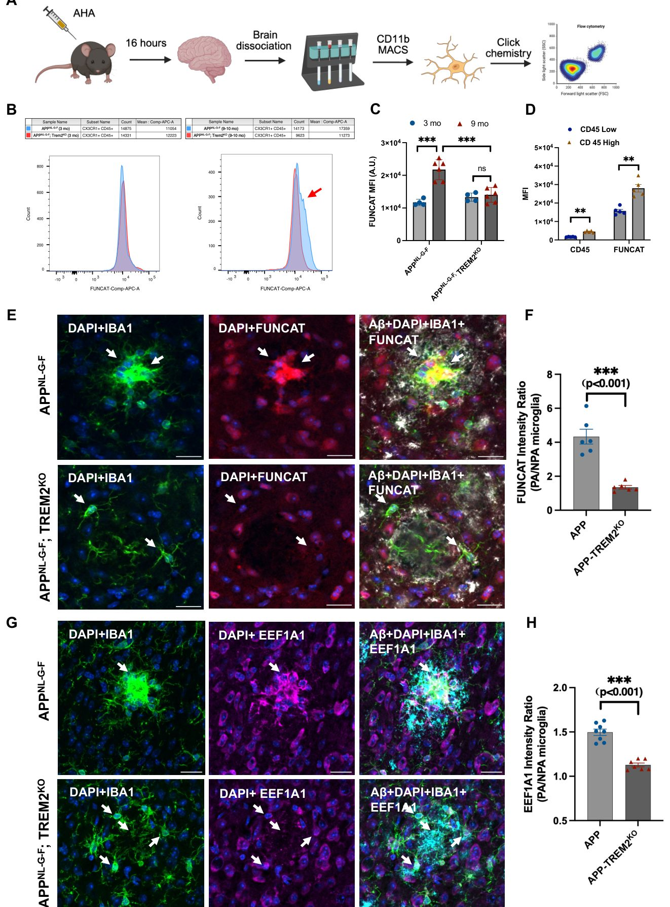
Суреттің толық сипаттамасы
3-сурет: TREM2 бляшкамен байланысқан микроглияда жаңадан түзілетін ақуыз синтезін басқарады. (A) In vivo FUNCAT таңбалау схемасы. Тышқандарға микроглияны бөліп алу және талдау алдында 16 сағат бұрын Азидогомоаланин (AHA, 50 мг/кг) енгізілді. (B) CX3CR1+ CD45+ микроглиясындағы FUNCAT қарқындылығының өкілді ағынды цитометрия гистограммалары. Қызыл көрсеткі AppNL-G-F микроглиясында бар, бірақ Trem2KO тышқандарында жоқ «FUNCAT-high» иығын көрсетеді. (C) FUNCAT сигналы үшін орташа флуоресценция қарқындылығының (MFI) мөлшерлік бағасы. (D) CD45high және CD45low микроглиальды популяциялары арасындағы CD45 және FUNCAT қарқындылығын салыстыру. (E) Iba1 (жасыл), Aβ (82E1, сұр) және жаңа ақуыздар (FUNCAT, қызыл) үшін боялған кортикальды бляшкалардың өкілді конфокальды кескіндері. Масштабты сызық: 50 мкм. (F) Бляшкамен байланысқан микроглиядағы FUNCAT қарқындылығының мөлшерлік бағасы. (G) Iba1 (жасыл) және Aβ (көгілдір) үшін бірлесіп боялған 9 айлық AppNL-G-F және AppNL-G-F;Trem2KO тышқандарының бляшкамен байланысқан микроглиясындағы трансляция элонгация факторы EEF1A1 (күлгін) өкілді конфокальды кескіндері. Ақ көрсеткілер Iba1+ бляшкамен байланысқан микроглия ішіндегі EEF1A1 индукциясын көрсетеді. Масштабты сызық: 20 мкм. (H) Iba1+ бляшкамен байланысқан микроглия ішіндегі EEF1A1 қарқындылығының мөлшерлік бағасы. n = әр топ үшін 7-8 тышқан. ***P < 0.001 екі жақты жұпталмаған t-тест бойынша.

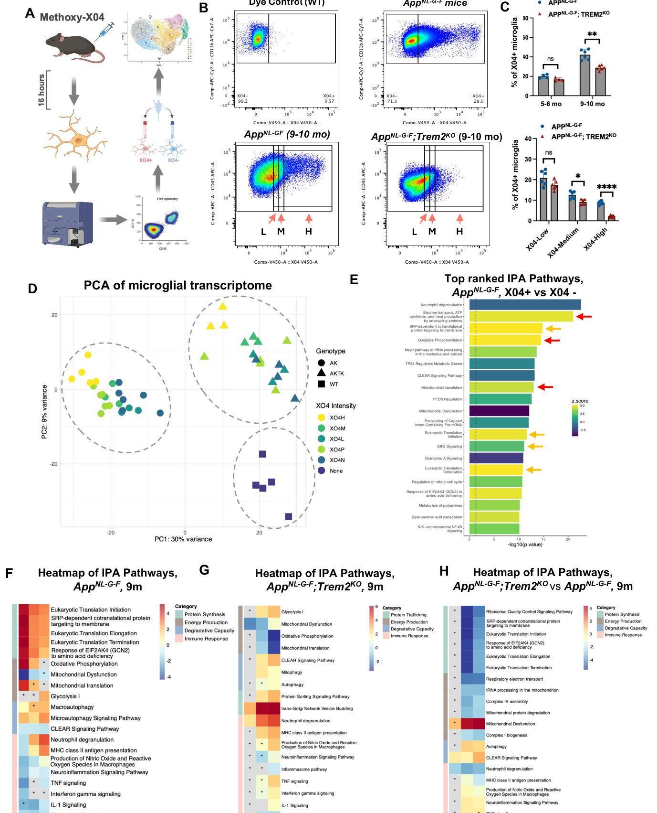
Суреттің толық сипаттамасы
4-сурет: Микроглиальды анаболикалық бейімделу TREM2-ге тәуелді және Aβ жүктеме градиенті бойынша өзін-өзі шектейді. (A) Транскрипциялық профильдеу үшін Methoxy-X04 (X04) оң (X04+) және теріс (X04-) микроглияны сұрыптауда қолданылатын гейтинг стратегиясының схемасы. (B) Aβ-фагоциттейтін микроглияның гейттелуін көрсететін өкілді ағынды цитометрия графиктер. Жоғарғы панельдер: Жабайы түрдегі (WT) және AppNL-G-F тышқандарын салыстыру X04 сигналының ерекшелігін растайды. Төменгі панельдер: AppNL-G-F және AppNL-G-F;Trem2KO тышқандарында артып келе жатқан фагоцитарлық жүктемені білдіретін X04+ популяциясын төмен, орташа және жоғары флуоресценция қарқындылығы биндеріне стратификациялау. (C) Aβ-фагоциттейтін микроглияны уақытша талдау. Жоғарғы панельдер: AppNL-G-F тышқандарында 5–6 айдан 9–10 айға дейін X04+ популяциясынын кеңеюі. Төменгі панельдер: 9 айлық AppNL-G-F және AppNL-G-F;Trem2KO тышқандарындағы X04 қарқындылығының таралуын салыстыру, бұл TREM2KO микроглиясында X04high популяциясының айтарлықтай азайғанын көрсетеді. (C) Жалпы RNA-seq үлгілерінің негізгі компоненттер талдауы (PCA) (n = 46). Нүктелер генотиптер бойынша жеке биологиялық қайталауларды білдіреді: WT (n = 5), AppNL-G-F (n = 23) және AppNL-G-F;Trem2KO (n = 18). Түстер X04 жіктелуін көрсетеді (X04- және X04+ ішкі жиынтықтары: төмен, орташа, жоғары). Айта кету керек, X04 деңгейлері PC2 бойымен бөлінуді тудырады және айқын бляшка-фагоцитарлық күйлерді анықтайды. (E) X04+ пен X04- AppNL-G-F микроглиясында байытылған жоғарғы рейтингті жолдардың IPA талдауы. Көрсеткілер Aβ әсер еткен кезде митохондриялық биогенез/окиздік фосфорлану (қызыл) мен ақуызды нысанаға алу/синтездеудің (сары) күшті индукциясын көрсетеді. (F, G) 9 айлық жастағы AppNL-G-F тышқандарында (F) және AppNL-G-F;Trem2KO тышқандарында (G) X04- бақылауларына қатысты фагоцитарлық градиент (X04high, X04med, X04low) бойынша микроглияның транскрипциялық өзгерістерін көрсететін IPA салыстыру талдауы. (H) 9 айлық жаста Methoxy-X04 қарқындылығы бойынша стратификацияланған AppNL-G-F пен AppNL-G-F;Trem2KO IPA салыстыруы. Таңдалған елеулі түрде байытылған каноникалық жолдар үшін активация z-ұпайлары (Фишердің нақты тесті; түзетілген P < 0.05) жылу картасы ретінде ұсынылған. Түс шкаласы болжанған жол бағытын көрсетеді: қызыл оң z-ұпайларға (болжанған активация), көк теріс z-ұпайларға (болжанған тежелу) сәйкес келеді, ал сұр IPA бағытын болжай алмаған жолдарды білдіреді. Статистикалық маңызы жоқ жолдар жұлдызшамен (*) белгіленген. Жолдар қатары биологиялық маңызына қарай төрт санатқа топтастырылған.

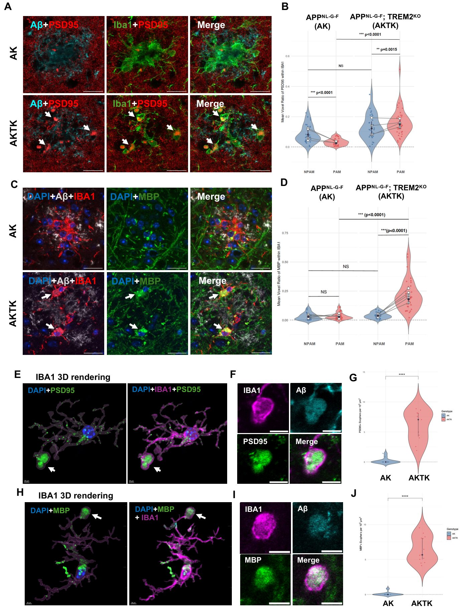
Суреттің толық сипаттамасы
6-сурет: TREM2 жоғалуы қорытылмаған заттардың жасуша ішінде жиналуына әкеледі. (A, C) PSD95 (постсинаптикалық маркер, A) немесе миелиннің негізгі ақуызына (MBP, C), сондай-ақ Iba1 және Aβ-ға бірге боялған 9 айлық тышқандардың бляшкалармен байланысқан микроглиясының өкілді конфокальды кескіндері. Ақ көрсеткілер Trem2KO микроглиясының сомасындағы PSD95 және MBP нүктелерінің айқын жасушаішілік жиналуын көрсетеді. Масштабтық сызғыш: 50 мкм. (B, D) Бляшканың жақындығына қарай жүктің жиналуын сандық бағалау. Скрипка диаграммалары Бляшкамен байланыспаған (NPAM) немесе бляшкамен байланысқан (PAM) ретінде жіктелген Iba1+ ROI ішіндегі PSD95 (B) немесе MBP (D) вокселінің қабаттасу пайызын көрсетеді. Түрлі-түсті нүктелер жеке ROI-ді көрсетеді; тұтас қара шеңберлер мен қателік сызғыштар бета-биномиалды жалпыланған сызықтық аралас модельден (GLMM) алынған Болжалды шеткі орташа мәндерді (EMM) ± 95% сенімділік интервалдарын көрсетеді. Сызықтар биологиялық қайталаулар шеңберіндегі жұптастырылған аймақтарды қосады (әр топ үшін n = 5-6 тышқан). Жұптық салыстырулар Дельта әдісі арқылы орындалды. Маңыздылық деңгейлері: *P < 0,05, P < 0,01, *P < 0,001, ****P < 0,0001. Маңызды емес трендтер үшін нақты p мәндері көрсетілген. (E) DAPI, PSD95 (жасыл), Iba1 (магента) және Aβ (көгілдір) үшін бірге боялған AppNL-G-F;Trem2KO тышқандарындағы бляшкамен байланысқан микроглиальді жасушаның 3D беттік көрінісі (Imaris). Жүкке толы үлкен өсіндінің шығыңқы болуына назар аударыңыз. (F) Iba1+ өсіндісінің ішінде PSD95 нүктелері мен Aβ агрегаттарының қоршалғанын растайтын жоғары үлкейтудегі (63X) бір оптический кесінді (0,17 мкм). (G) Бляшка нишасындағы PSD95+ өсінділерін сандық бағалау (105 мкм3 ROI). Әрбір нүкте жеке бляшка ROI-ін білдіреді. Медианалар мен интерквартильдік ауқымдар (IQRs) сәйкесінше нүктелермен және сызықтармен көрсетілген. Статистикалық маңыздылық нақты алмастыруы бар параметрлік емес Уилкоксон рангтік-сомалық тесті арқылы анықталды (R пакеті coin, v1.4.3). (H) Миелиннің негізгі ақуызының (MBP) қалдықтарын қамтитын өсінділердің 3D беттік көрінісі. (I) Өсінді люмені ішіндегі MBP жүгінің бар екенін растайтын жалғыз оптикалық кесінді (0,17 мкм). (J) Генотиптер арасындағы MBP+ өсінділерінің тығыздығын сандық бағалау.

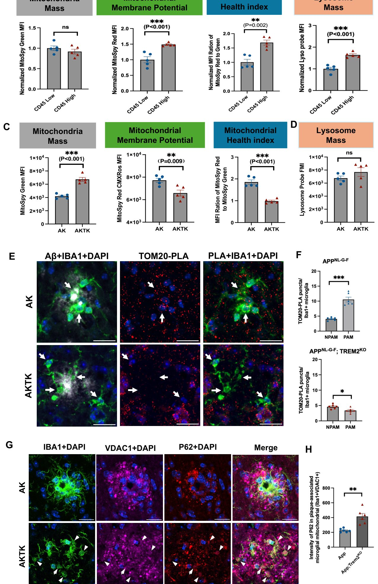
Суреттің толық сипаттамасы
7-сурет: TREM2 жоғалуы бляшкамен байланысқан микроглияда митохондриялық биогенез бен жаңарудың төмендеуіне әкеледі. (A) 9 айлық AppNL-G-F тышқандарының CD45low (бляшкамен байланыспаған) және CD45high (бляшкамен байланысқан) микроглиясындағы митохондриялық жарамдылықты ағынды цитометрия арқылы талдау, митохондриялық массаны (MitoTracker Green), мембраналық потенциалды (MitoTracker Red CMXRos) және митохондриялық денсаулық индексін (мембраналық потенциалдың массаға қатынасы) сандық бағалау. CD45high микроглиясы жоғарылаған мембраналық потенциалды көрсетеді, бұл кеңейтілген биоэнергетикалық сыйымдылықты білдіреді. (B) Сол популяциялардағы лизосомалық масса (LysoTracker Deep Red); CD45high микроглиясы жоғарырақ лизосомалық массаны көрсетеді, бұл деградациялық қабілеттің индукциясын растайды. (C) 9 айлық AppNL-G-F және AppNL-G-F;Trem2KO тышқандарының бастапқы микроглиясындағы митохондриялық жарамдылық (A-дағыдай көрсеткіштер). Trem2KO микроглиясы «Жоғары масса / Төмен потенциал» фенотипті көрсетеді, бұл метаболикалық жарамсыз органеллалардың жиналғанын көрсетеді. (D) Лизосомалық масса (LysoTracker Deep Red); генотип айырмашылығының болмауы митохондриялық жиналудың лизосомалық жетіспеушілікке байланысты емес екенін көрсетеді. (E) AHA-TOM20 жақындықты лигирлеу анализі (PLA) арқылы in situ пайда болған митохондриялық биогенез. Өкілді конфокальды кескіндер бляшка нишасындағы Iba1+ микроглия (жасыл) ішіндегі жаңадан синтезделген TOM20-ны (TOM20-PLA нүктелері, қызыл) көрсетеді, бұл AppNL-G-F-те күшті және Trem2KO микроглиясында әлсіреген. (F) Әрбір микроглия үшін пайда болған TOM20-PLA нүктелерінің санын сандық бағалау (әр тышқан үшін кездейсоқ таңдалған 10-15 бляшка бағаланды). (G) VDAC1, P62 (аутофагия рецепторы) және Iba1 үшін бірге боялған бляшкамен байланысқан микроглияның өкілді конфокальды кескіндері (MIP, 5 мкм). Ақ көрсеткілер Trem2KO микроглиясында жоғары p62 бар VDAC1+ митохондрияларын көрсетеді. Масштабтық сызғыш: 20 мкм. (H) IBA1⁺VDAC1⁺ аймақтарындағы P62 қарқындылығын сандық бағалау; әр тышқан үшін 20-30 бляшка бағаланды.

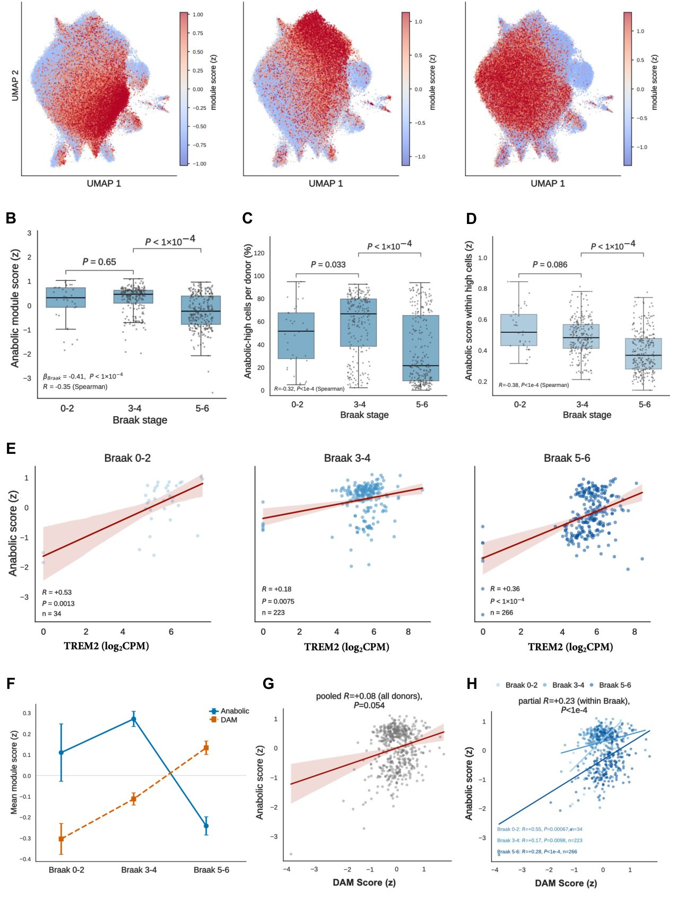
Суреттің толық сипаттамасы
8-сурет: Микроглиальді анаболикалық бағдарлама адамдарда сақталады және АД өршуімен төмендейді. (A) Біріктірілген адам микроглиальді UMAP-қа жобаланған анаболикалық, DAM және гомеостатикалық бағдарламалар үшін ядро бойынша модуль ұпайлары (ssKIND атласы; 523 донор). (B) Брак сатылары бойынша донор деңгейіндегі псевдо-көлемді анаболикалық модуль ұпайы (0–II, III–IV, V–VI). Әрбір нүкте бір донор; қораптар медиана мен интерквартильдік ауқымды көрсетеді. Анаболикалық ұпай Брак сатысы бойынша төмендейді (сызықтық модель β = −0,41, P = 1,8×10⁻⁵; Спирмен R = −0,35), ең күрт Брак III–IV пен V–VI арасында. n = 34 / 223 / 266 донор (Браак 0–II / III–IV / V–VI). Жұптық салыстырулар, Манн–Уитни U. (C) Әр донор үшін анаболикалық-жоғары жасушалардың үлесі; (D) сол жоғары жасушалар ішіндегі орташа анаболикалық ұпай; жасушалар жаһандық шекте анаболикалық-жоғары деп белгіленді (барлық жасушалар бойынша жасуша деңгейіндегі анаболикалық ұпайдың ең жоғарғы 30%). (E) Әр Брак сатысы үшін донорлар арасындағы анаболикалық модуль ұпайына қарсы TREM2 экспрессиясы (log₂ CPM). Спирмен R әр сатыда оң; Брак сатысын бақылайтын жартылай R = +0,28. Қызыл сызық, сызықтық жуықтау; боялған жолақ, 95% сенімділік интервалы. (F) Брак сатылары бойынша орташа анаболикалық және DAM модуль ұпайлары (қателік сызғыштар, с.e.m.), Брак V–VI бойынша алшақтауды көрсетеді. Брак сатысын бақылайтын жартылай Спирмен корреляциялары: анаболикалық–TREM2 R = +0,28; анаболикалық–DAM R = +0,23; анаболикалық–гомеостатикалық R = +0,08 (n.s.). (G) Барлық донорлар бойынша біріктірілген DAM модулімен анаболикалық бағдарламаның донор деңгейіндегі қосылуы (жалғыз регрессия, біріктірілген Спирмен R). (H) DAM модулімен анаболикалық бағдарламаның донор деңгейіндегі қосылуы; жартылай Спирмен R көмегімен Брак ішіндегі регрессия (Брак сатысын бақылайтын).

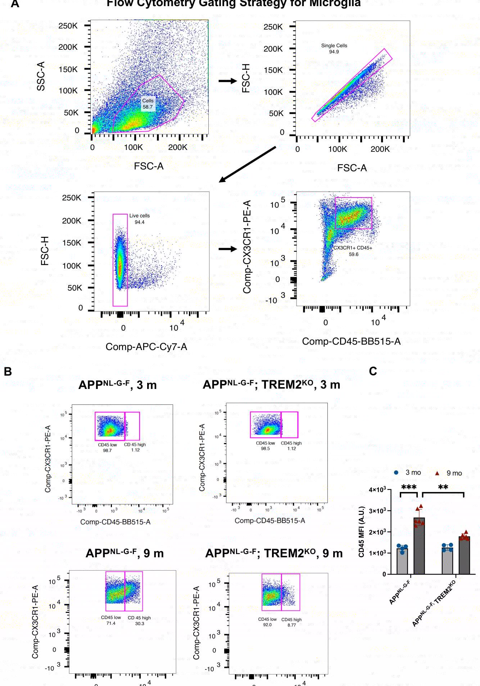
Суреттің толық сипаттамасы
Қосымша 3-сурет. (A) Ми тінсінен тірі, жалқы микроглиальді жасушаларды (CX3CR1+ CD45+) бөліп алу үшін қолданылатын өкілді ағынды цитометрияның гейтинг стратегиясы. (B) AppNL-G-F тышқандарында 3 айдан 9 айға дейінгі жаста CD45 жоғары деңгейлі (CD45high) микроглия популяциясының уақыт өте келе ұлғаюын көрсететін өкілді ағынды цитометрия графиктер. Назар аударыңыз, бұл ұлғаю AppNL-G-F;Trem2KO тышқандарында айтарлықтай әлсіреген. (C) 3 және 9 айлық AppNL-G-F пен AppNL-G-F;Trem2KO тышқандарынан бөлініп алынған бастапқы микроглиядағы CD45 орташа флуоресценция қарқындылығының (MFI) сандық бағасы. (D) Iba1 және Aβ үшін бірлесіп боялған, 9 айлық AppNL-G-F және AppNL-G-F;Trem2KO тышқандарының бляшкалармен байланысқан микроглиясындағы фосфорланған рибосомалық S6 ақуызының (p-RPS6, Ser235/236) өкілді конфокалды кескіндері. (E) Әрбір микроглиальді жасушаға шаққандағы p-RPS6 қарқындылығының сандық бағасы. n = топтағы 6-8 тышқан. Екі жақты жұптаспаған t-тест бойынша ***P < 0.001.

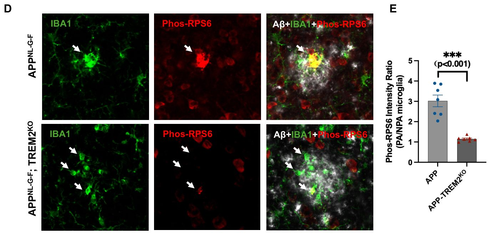

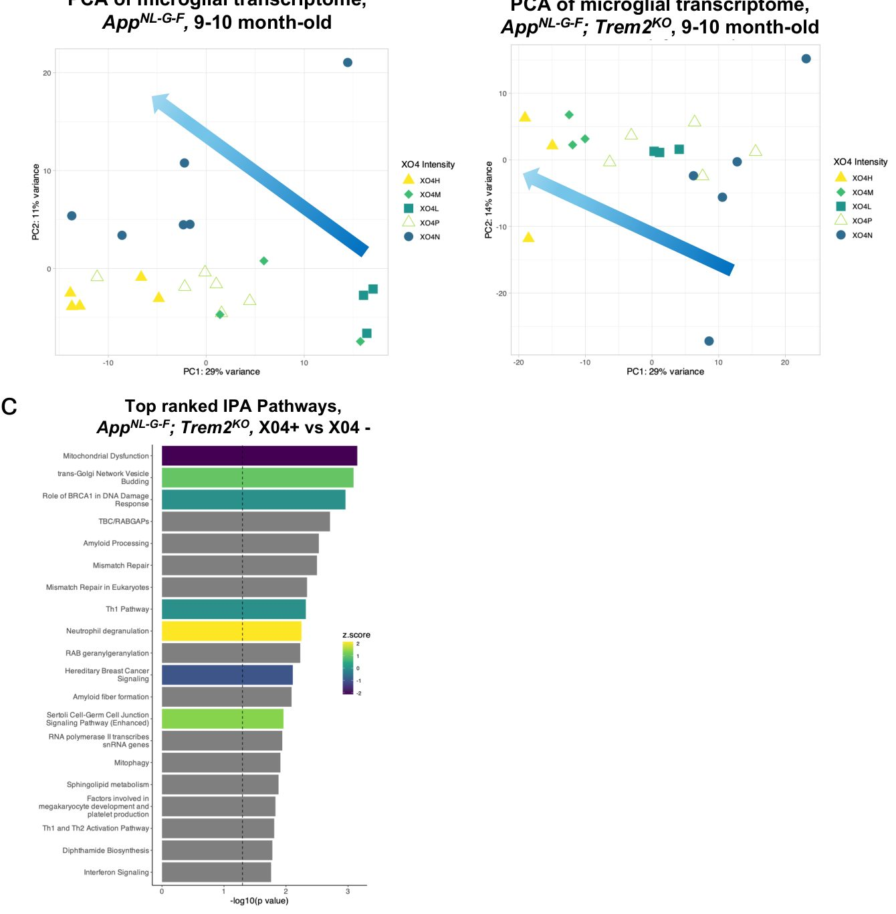
Суреттің толық сипаттамасы
Қосымша 4-сурет. (A, B) 9 айлық AppNL-G-F және AppNL-G-F;Trem2KO микроглиясында әртүрлі Aβ жүктемесі дәрежесін білдіретін X04 қарқындылығымен байланысқан микроглияның әртүрлі транскрипциялық күйлері. (A) 9 айлық AppNL-G-F тышқандарынан бөлініп алынған микроглияның bulk RNA-seq деректерінің негізгі компоненттер талдауы (PCA) (X04H, n = 5; X04M, n = 3; X04L, n = 3; X04P, n = 6; X04N, n = 6). (B) 9 айлық AppNL-G-F;Trem2KO тышқандарынан бөлініп алынған микроглияның bulk RNA-seq деректерінің PCA талдауы (X04H, n = 3; X04M, n = 3; X04L, n = 3; X04P, n = 5; X04N, n = 5). Стрелка (көктен ақшыл көкке дейінгі градиент) төменнен (оң жақта) жоғарыға (сол жақта) дейінгі X04 қарқындылығының спектрін білдіреді. (C) 9 айлық AppNL-G-F;Trem2KO тышқандарынан алынған X04+ және X04- микроглияларын салыстыратын IPA канондік жолдарын талдау. Бағанды диаграмма X04+ микроглиясында айтарлықтай байытылған үздік 20 канондік жолды көрсетеді (Фишердің дәл тестінің p-мәні < 0.05). Назар аударыңыз, TREM2 тапшылығы бар микроглияда анаболикалық бейімделу толығымен тоқтатылған. Жолдар байыту маңыздылығы бойынша реттелген және −log10(P-мәні) түрінде көрсетілген.

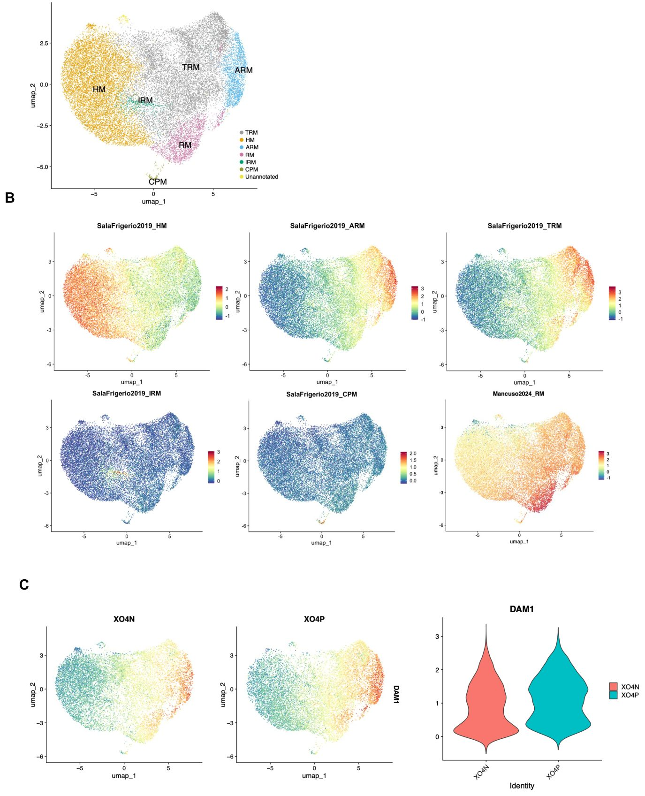
Суреттің толық сипаттамасы
Қосымша 5-сурет. (A) scRNA-seq деректерінің (0.2 ажыратымдылық) біркелкі көптүрлілік жақындауы мен проекциясы (UMAP) алты әртүрлі микроглиальді кластерді анықтайды: гомеостатикалық микроглия (HM), белсендірілген жауап микроглиясы (ARM), өтпелі жауап микроглиясы (TRM), интерферондық жауап микроглиясы (IRM), циклдік/пролиферацияланатын микроглия (CPM) (Sala Frigerio et al., 2019) және рибосомалық микроглия (Mancuso et al., 2024), сондай-ақ шағын аннотацияланбаған кластер. (B) Белгіленген модуль ұпайларын пайдалана отырып кластер біркелкілігін тексеру. Белгілер графикасы Sala Frigerio et al. (2019) ген қолтаңбаларының проекциясын көрсетеді, бұл ағымдағы кластерлеу мен бұрын анықталған күйлер арасындағы сәйкестікті растайды. Түс градиенттері әр жасуша үшін есептелген модуль ұпайын білдіреді (Көк: Төмен; Қызыл: Жоғары). (C) Аурумен байланысты канондік микроглия (DAM) қолтаңбасының таралуы. UMAP проекциялары (сол жақта) және скрипка диаграммалары (оң жақта) фагоцитарлық емес X04- және фагоцитарлық X04 жағдайларында DAM қолтаңбасының (Chen & Colonna, 2021) экспрессиясын көрсетеді. Y осі модуль ұпайын білдіреді; скрипка ені жасуша тығыздығын көрсетеді. (D) X04 жағдайы бойынша кластерлеудің сапасын бақылау. Фагоцитарлық емес (X04-) және фагоцитарлық (X04+) жағдайлар бойынша бөлінген жоғары ажыратымдылықтағы субкластерлердің (0.3 ажыратымдылық) UMAP проекциялары X04+ және X04- жасушаларының бөлек субкластерлерді алатынын көрсетеді. (E) X04- және X04+ жағдайларындағы әрбір субкластер (0.3 ажыратымдылық) үшін DAM модуль ұпайларын көрсететін скрипка диаграммалары. Назар аударыңыз, DAM ұпайлары фагоцитарлық және фагоцитарлық емес субкластерлер арасында салыстырмалы. (F) Фагоцитарлық 1-кластерді фагоцитарлық емес 6-кластермен салыстыратын ең жоғары рангті канондік жолдардың IPA талдауы. Қызыл стрелкалар ақуыз синтезі және трансляция жолдарының индукциясын атап көрсетеді; көк стрелка басылған нейровоспаление сигналдарын білдіреді. (G) Фагоцитарлық байытылған 2-кластерді фагоцитарлық емес 0-кластермен салыстыратын ең жоғары рангті канондік жолдардың IPA талдауы. Қызыл стрелкалар Рибосомалар биогенезі мен ақуыз синтезінің күшейгенін атап көрсетеді; сары стрелкалар митохондриялық тотығу фосфорлануының активациясын білдіреді. (H) 0-кластермен салыстырғанда 2-кластерде арнайы байытылған Биологиялық процесс (BP) терминдерінің GSEA нүктелік графигі. Түс градиенті түзетілген P-мәндерін білдіреді. Қосымша 5-сурет (жалғасы)

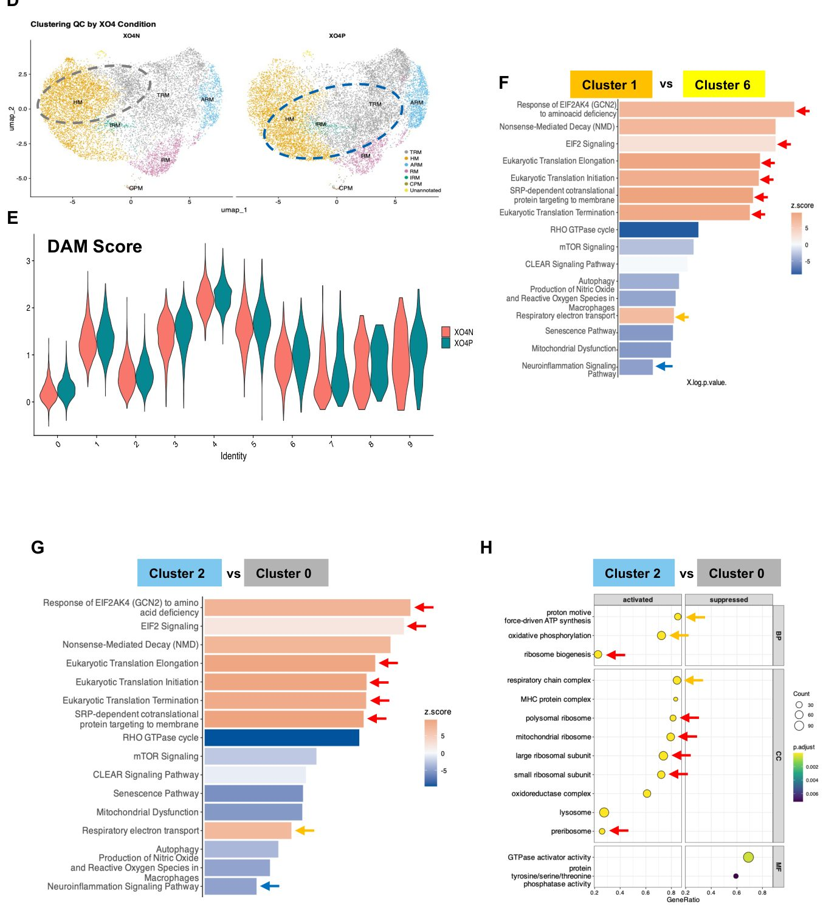

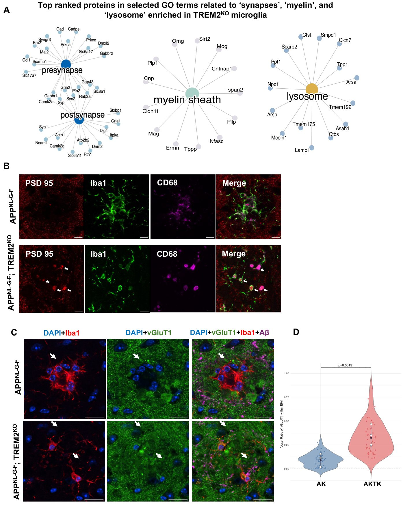
Суреттің толық сипаттамасы
Қосымша 6-сурет. (A) Гендік-концептуалдық желілік (cnet) графиктер «Синапс», «Миелин қабығы» және «Лизосома» гендік онтология (GO) терминдерімен байланысты ең жоғары дифференциалды ақуыздарды көрсетеді. Назар аударыңыз, бұл жүк ақуыздары 9 айлық жаста AppNL-G-F бақылау тобымен салыстырғанда Trem2KO микроглиясында арнайы түрде байытылған, бұл ішке қабылданған материалды ыдырата алмауын көрсетеді. (B) PSD95 (постсинаптикалық маркер), CD68 (лизосомалық маркер) және Iba1 үшін бірлесіп боялған 9 айлық тышқандардағы бляшкалармен байланысқан микроглияның өкілді конфокалды кескіндері. Ақ стрелкалар жүктің сәтті ішке қабылданғанын және деградациялық компартменттерге тасымалданғанын көрсететін CD68+ фаголизосомалар ішінде қоршалған PSD95 нүктелерін көрсетеді. Масштабтық сызғыр: 50 мкм. (C) vGluT1 (пресинаптикалық маркер), Iba1 және Aβ үшін бірлесіп боялған 9 айлық тышқандардағы бляшкалармен байланысқан микроглияның өкілді конфокалды кескіндері. Ақ стрелкалар Trem2KO микроглиясының сомасы ішінде vGluT1 нүктелерінің айқын жасушішілік жиналуын атап көрсетеді. Масштабтық сызғыр: 50 мкм. (D) 9-10 айлық AppNL-G-F тышқандары мен AppNL-G-F;Trem2KO тышқандарының ми кесінділеріндегі жасушішілік жүк жиналуының (vGluT1 және т.б.) сандық бағасы. Түрлі түсті нүктелер жеке ROI-ларды білдіреді; тұтас қара дөңгелектер мен қателік сызықтары бета-биномиалды Жалпы сызықтық аралас модельден (GLMM) алынған Болжалды маргиналды орташа мәндерді (EMM) ± 95% сенім аралықтарын (CI) білдіреді. (n = топтағы 5-6 тышқан). Жұптық салыстырулар Дельта әдісі арқылы орындалды. Маңыздылық деңгейлері: *P < 0.05, P < 0.01, *P < 0.001, ****P < 0.0001. (E) PSD95 (постсинаптикалық маркер), Iba1 және Aβ үшін бірлесіп боялған бляшкалармен байланысқан микроглияның өкілді конфокалды кескіндері (MIP, 5 мкм). Ақ стрелкалар Trem2KO микроглиясынан шығатын PSD95 нүктелерімен толтырылған, өсінділермен байланысты үлкен (>2 мкм) жүк қосындыларын көрсетеді. Қызыл стрелка 6E суретіндегі 3D беттік визуализация үшін пайдаланылған жасушаны көрсетеді. Масштабтық сызғыр: 20 мкм. (F) Миелиннің негізгі ақуызына (MBP), Iba1 және Aβ үшін бірлесіп боялған өкілді конфокалды кескіндер (MIP, 5 мкм). Ақ стрелкалар Trem2KO микроглиясындағы MBP-мен толтырылған жүк қосындыларын көрсетеді. Қызыл стрелка 6H суретіндегі 3D беттік визуализация үшін пайдаланылған жасушаны көрсетеді. Масштабтық сызғыр: 20 мкм. (G-H) PSD95 (қызыл, G) немесе MBP (жасыл, H) қамтитын жүк қосындыларының бүршік тәрізді морфологиясын растайтын AppNL-G-F;Trem2KO тышқандарындағы бляшкалармен байланысқан микроглияның қосымша 3D беттік визуализациялары (Imaris). Микроглиальді мембрана маджента түрінде көрсетілген (Iba1). Қосымша 6-сурет (жалғасы)

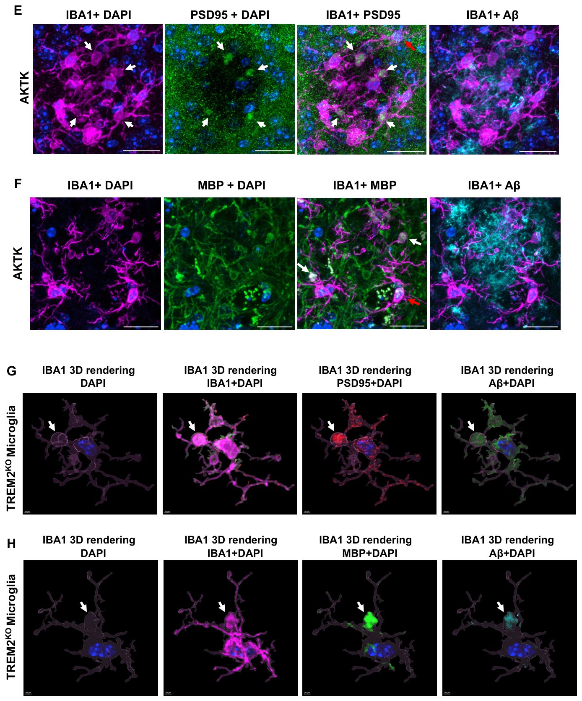

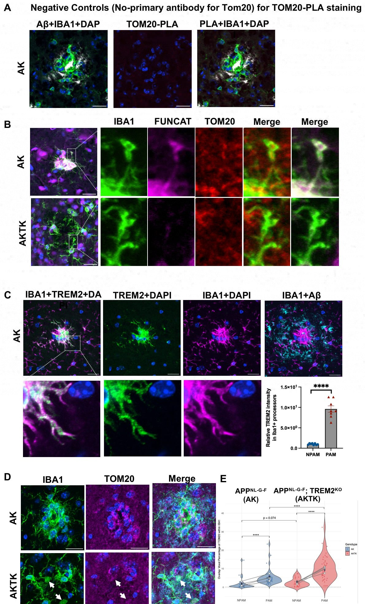
Суреттің толық сипаттамасы
Қосымша 7-сурет. (A) TOM20 жақындықпен байланыстыру талдауына (PLA) арналған теріс бақылау. TOM20 бастапқы антиденелері қосылмай, параллель өңделген бляшкалармен байланысқан микроглияның өкілді конфокалды кескіндері; PLA сигналының жоқтығы TOM20-PLA реакциясының ерекшелігін растайды. Масштабтық сызғыр: 20 мкм. (B) TOM20 (митохондрия), Iba1 және FUNCAT (жаңадан түзілген ақуыз синтезі) үшін бірлесіп боялған 9-10 айлық AppNL-G-F тышқандары мен AppNL-G-F;Trem2KO тышқандарындағы бляшкалармен байланысқан микроглияның өкілді конфокалды кескіндері (MIP, 4 мкм z-стек). Масштабтық сызғыр: 20 мкм. (C) Екі генотипте де TREM2, Iba1 және Aβ үшін бірлесіп боялған өкілді конфокалды кескіндер (MIP, 4 мкм z-стек). Ақ қораптар 7E суретінде көрсетілген жергілікті митохондриялық биогенез орындарымен кеңістіктік тұрғыдан сәйкес келетін AppNL-G-F микроглиясының өсінділері ішіндегі TREM2 ақуызының арнайы индукциясын атап көрсетеді. Масштабтық сызғыр: 20 мкм. (D-E) Бляшкаларға жақындығына қатысты митохондриялық массаның жиналуының өкілді кескіндері мен сандық бағасы. Скрипка диаграммалары Бляшкалармен байланыспаған (NPAM) немесе Бляшкалармен байланысқан (PAM) ретінде жіктелген Iba1+ ROI шеңберіндегі TOM20 вокселінің қиылысу таралуын көрсетеді. Түрлі түсті нүктелер жеке ROI-ларды білдіреді; тұтас дөңгелектер мен қателік сызықтары бета-биномиалды Жалпы сызықтық аралас модельден (GLMM) алынған Болжалды маргиналды орташа мәндерді (EMM) ± 95% сенім аралықтарын (CI) білдіреді. Сызықтар биологиялық қайталаулар шеңберіндегі жұпталған аймақтарды байланыстырады (n = 5-6 тышқан). Жұптық салыстырулар Дельта әдісі арқылы орындалды. *P < 0.001, **P < 0.0001.

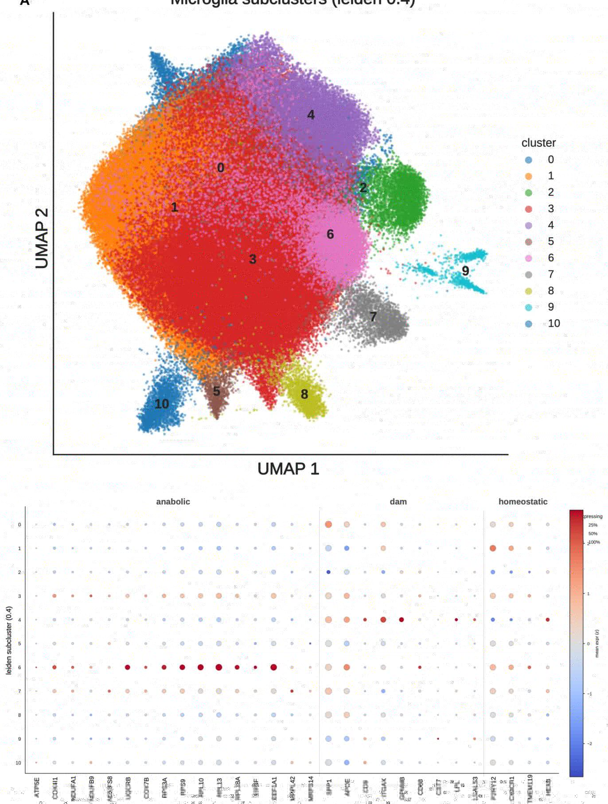
Суреттің толық сипаттамасы
Қосымша 8-сурет. (A) Адам микроглиясын бақылаусыз қайта кластерлеу (Лейден ажыратымдылығы 0.4) және модульдік-гендік нүктелік диаграмма, DAM-маркері жоғары субкластерден ерекшеленетін рибосомалық/жоғары анаболикалық субкластерді анықтайды. (B) qPCR/RNA-seq нормализация әдебиетінен алынған тоғыз кең қолданылатын тұрақты референтті генге негізделген Браак сатылары бойынша тұрақты-референтті бақылау модулінің ұпайы (n.s.): ACTB, TBP, POLR2A, PPIA, HPRT1, YWHAZ, PUM1, CASC3, ELF1. (C) Браак сатылары бойынша әр ядроға анықталған медианалық гендер (секвенирлеу тереңдігін бақылау; n.s.). (D) Браак бойынша жасушалық анаболикалық бөліну. Донор деңгейіндегі төмендеу негізінен композициялық сипатта (жоғары анаболикалық жасушалар азырақ) және кішірек жасушалық компонентке ие. (E) Әрбір Браак сатысы үшін DAM-жоғары микроглия ішіндегі TREM2 пен анаболикалық ұпайдың арақатынасы (Спирмен R). (F) Донор деңгейінде анаболикалық бағдарламаның TREM2-мен байланысы. Жоғарғы қатар: Браак сатысын басқара отырып, ішінара Спирмен R көмегімен Браак ішіндегі регрессия. Төменгі қатар: барлық донорлар бойынша біріктірілген сол тәуелділік (жеке регрессия, біріктірілген Спирмен R). (G) Донор деңгейінде анаболикалық бағдарламаның гомеостатикалық модульмен байланысы (теріс бақылау). Жоғарғы қатар: Браак сатысын басқара отырып, ішінара Спирмен R көмегімен Браак ішіндегі регрессия. Төменгі қатар: барлық донорлар бойынша біріктірілген сол тәуелділік (жеке регрессия, біріктірілген Спирмен R).

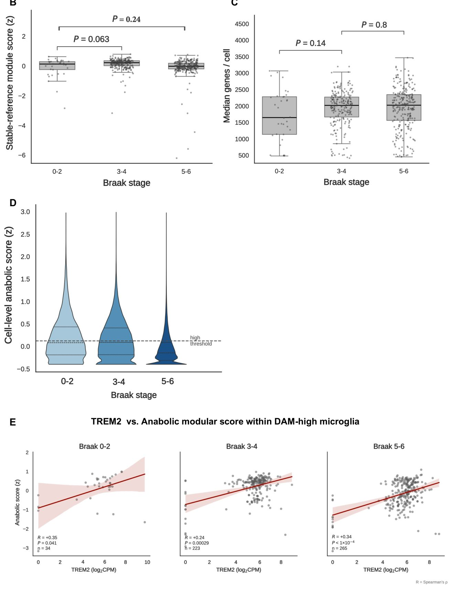

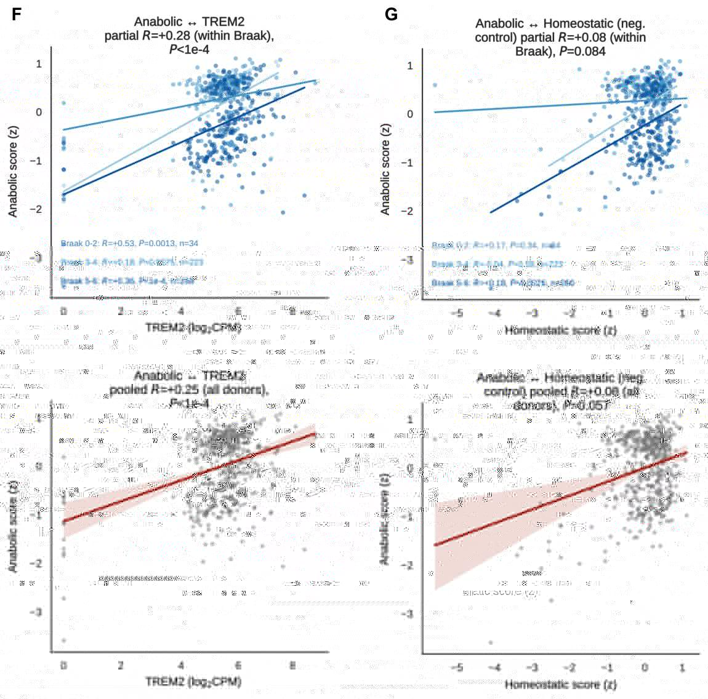
Зерттеу сызбасы
Препринт әлі рецензиядан өтпеген. Қорытындылар алдын ала.
Дереккөз
| Дереккөз | Санат | Препринт лицензиясы |
|---|---|---|
| bioRxiv | neuroscience | CC BY-NC-ND 4.0 |
Дереккөздер
| Дереккөз | Сілтеме |
|---|---|
| Страница препринта | biorxiv.org |
| Полный текст (PDF) | biorxiv.org |
| Копия PDF | github.com |
| DOI | doi.org |
| Метаданные Crossref | api.crossref.org |
| Europe PMC | europepmc.org |
| Иллюстрация | commons.wikimedia.org |